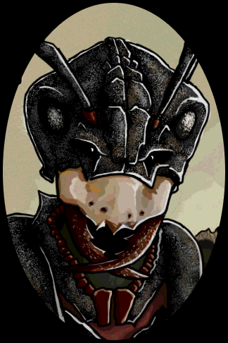
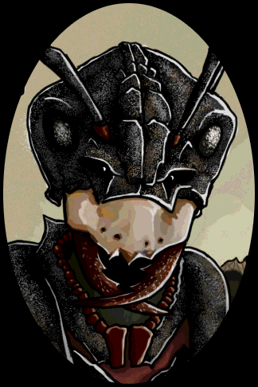
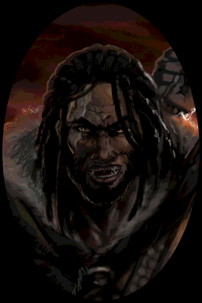
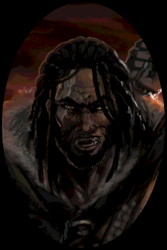

Reading order for new readers,
ignore the other books, do not shuffle


1. Gardens of the Moon
2. Deadhouse Gates
3. Memories of Ice
4. House of Chain
5. Midnight Tides
6. The Bonehunters
7. Reaper’s Gale
8. Toll the Hounds
9. Dust of Dreams
10. The Crippled God
Ultimate reading order for re-readers


Blood Follows;
Lees of Laughter’s End
The Wurms of Blearmouth
The Healthy Dead
Crack’d Pot Trail
Not part of the re-read, read only after finishing the Crippled God
A Walk In Shadow (Currently in progress as of July 2024)
Path to Ascendancy series
Kharkanas Trilogy
Witness #2 (TBA)
Witness #3 (TBA)
Witness series
Witness #4 (TBA)
PaT #5
PaT #6
Malaz City is the former capital of the Malazan Empire
Prologue starts here


Prologue (Malaz City, Ganoes Paran)
Emperor Kellanved is missing. Clawmaster [Note: Master of Assassins] Surly dictates new laws prohibiting unsanctioned sorcery.
Witches started riots against these new sanctions, Surly sends a whole cadre of mages to put it down & the capital is on fire
Surly is Napan, a human people from the Napan Isles that have blue skin
Commander Whiskeyjack and young Ganoes Paran stand on Mock’s Hold and watch the Mouse Quarter burn
Ganoes asks WJ if Dassem Ultor, The First Sword of the Empire (commander-in-chief of all armies), died. WJ is shocked, only few people know that
Surly enters the scene. WJ questions her actions and she tells WJ that she’ll be sending WJ and his “seditious” troops elsewhere
Surly changes her name to mean Laseen [Note: Napan word for “Thronemaster”]
Laseen orchestrates the bloody coup of mass purges, culling of the nobility, and assassination of Emperor Kellanved and his chief advisor Dancer to usurp the throne


Chapter 1 Scene 1-2 (Itko Kan coast, fisher girl)
A column of soldiers pass by. An outrider comes seeing the witch assaulting the young girl and slaps the witch with his gauntleted hand
The wax witch falls onto the fishergirl. When the fishergirl pushes her off, she sees that the witch is dead ☠️
The column of soldiers pass out of sight
“Never mind the candles,” she mumbled, in a thick, odd voice. “They’re gone, aren’t they, now? Just a scattering of bones. Never mind.” She crawled toward the bundles of twine that had fallen from the breached basket, and when she spoke again her voice was young, normal.
Two ominous hooded figures appear and name themselves Ammanas (aka Shadowthrone) and Cotillion
Darkness surrounds them and lifts immediately to reveal seven massive Hounds that run off to slaughter the soldiers
Shadowthrone and Cotillion talk about getting vengeance against Laseen
Cotillion takes possession of the fisher girl
“It’s not so bad a thing, lass, to be the pawn of a god.”
“Prod and pull,” the fisher girl said quickly.


Chapter 1 Scene 2 (Itko Kan coast, Ganoes Paran)
Adjunct Lorn and her soldiers go to Itko Kan to investigate the massacre of 175 soldiers of the Itko Kanese cavalry, 210 horses, and over 400 villagers
[Note: Adjunct is like second in command, speaks on the Empress’ behalf when she’s not present]
Adjunct Lorn meets Lt. Ganoes Paran, kid from the prologue and son of noble House Paran
[Note: 21 years old now]
Paran reports of a fishing settlement down the down, all but two huts are full of dead bodies.
The first empty hut is full of wax candles [Note: from the wax witch] and the second empty hut belongs to a missing father and daughter
They go to the huts. Lorn decides the sorcerous murders were a diversion to get to the father and daughter
Lorn sends Paran to the city Gerrom to ask around for the whereabouts of the missing father/daughter as well as a new list of recruits to the army


Chapter 1 Scene 3 (Itko Kan, Sorry)
“[Ikto] Kan’s Fist had made her instructions abundantly clear: if they had two arms, two legs and a head, take them. The Genabackis campaign was a mess. Fresh bodies were needed.”
Staff Sergeant Aragan worked recruitment
A girl about 12 or 13 years old walks up to the recruiting desk. She wants to be recruited to the Genabacken campaign under High Fist Dujek Onearm
She names herself Sorry, the recruiter tells her to wash mud off her feet and notice the mud is dark red

Chapter 1 Scene 4 (Gerrom, Ganoes Paran)
Paran reaches Gerrom and finds the city empty until he walks into the constabulary where it’s full of corpses and black pigeons. All the records on the desk crumble to the touch
As he rides his horse away from Gerrom the Commander of the Claw, Topper, blocks the road. He comes to escort Paran back to Unta via the Imperial Warren
The Claw being the Empire’s organization of elite assassins
Paran turned to see a curtain in the air tear open on the road, spilling dull yellow light. A Warren, the secret paths of sorcery.
Paran followed. The portalway closed behind them, in its place a continuation of the path. Itko Kan had vanished, and with it all signs of life. The world they had entered was barren, deathly. The banked mounds lining the trail proved to be more ash. The air was gritty, tasting of metal.
Stepping out from the warren, Topper and Paran enter the throne chamber with Laseen sitting on the her throne
Basically fast-traveled across oceans
Laseen recalls their meeting on Mock’s Hold seven years ago and sends him to go see Adjunct Lorn
Paran relays his findings in Gerrom to Lorn. She decides that Paran is pretty resilient to the gruesome and tells him to keep Itko Kan hush-hush


Chapter 1 Scene 5 (Unta, Ganoes Paran)
Paran goes home to his estates in the Noble District of Unta
House Paran is a wine merchant family
Captain of the guards for House Paran, Gamet, meets Paran at the door
Inside, Paran sees his younger sister Tavore. She’s taken over the House business as their father is ailing and their younger sister Felisin is in her studies

Chapter 2 Scene 1 (Pale, Tattersail)
2 years after the Itko Kan massacre, 9 years after the prologue [Note: 1163rd Year]
Immediately following the Siege of Pale,
Tattersail, commander of the Malaz 2nd Army wizard cadre, catches her breath and talks to Hairlock who’s missing his bottom half
Sgt. Whiskeyjack, Kalam, Quick Ben, and Sorry approach. All members of the Malaz 2nd Army’s 9th Squad, the legendary Bridgeburners
WJ got demoted from Commander to Sergeant during the time skip
For the past 3 years, the Bridgeburners had been undermining Pale’s massive walls with tunnels.
When the tunnels collapsed the Bridgeburners had been reduced from 1400 to about 30 to 35 soldiers
High Mage Tayschrenn ordered the Bridgeburners to stop searching for survivors


Chapter 2 Scene 2 (Near Pale, Tattersail)
Tattersail recalls events less than an hour before the Siege of Pale
Tattersail awakens in the tent after a night with another cadre mage and friends with benefits, Calot
The Tiste Andii on the sky fortress Moon’s Spawn, led by Anomander Rake, have been resisting Malazan conquest along with the Crimson Guard mercenary company, and the warlord Caladan Brood
[Note: Pronounced “tighst andy” thanks to Ten Very Big Books interview with Steven Erikson himself]
The Malaz 5th Army spent the past 4 years in Blackdog Forest before they could push towards Pale

Chapter 2 Scene 2 (Tattersail’s Flashback)
Tattersail and Calot walk to the war tent with Hairlock, Dujek entering later
Dujek relays his plan to send Claw assassins to infiltrate Pale to eliminate their wizards internally while their own mages will strike externally
The Malaz 5th Army in the Northern Campaign keeps Caladan Brood and the Crimson Guard occupied, leaving the Tiste Andii alone in Moon’s Spawn defending Pale
The Malazan Army is getting desperate since the Malaz 5th Army is almost wiped out and no reinforcements will show up for a long time
Dujek is banking on the chance that the Tiste Andii will retreat since they have no real stake in the war, they just hop from one human conflict to the next


Chapter 2 Scene 2 (Near Pale, Tattersail)
Other High Mages of note on the battlefield:
Nightchill: raven-haired, tall, and has a nasty streak Emperor Kellanved liked
Bellurdan Skullcrusher: Nightchill’s lover, a Theloman [Note: 7-foot tall humanoids]
A’Karonys: short, round fire wielder with a really long staff
“The T’lan Imass refused to acknowledge the new Empress, marched themselves off into the Jhag Odhan”
The Siege of Pale begins


Chapter 2 Scene 2 (Near Pale, Tattersail)
Tattersail watches Hairlock get cut in half. Tattersail falls and Calot stood over her to defend her as he dies from a blast of fire
Tattersail realizes Calot was looking “eyes wide with terror” at someone down below at the plain
At this point in the flashback, present day Tattersail realizes they’ve been betrayed
Nightchill is torn apart by Kenryll’ah demons, Bellurdan comes to kill them
A’Karonys surrounds Moon’s Spawn in a ball of fire, but then gets crushed by ethereal wings of ice
Pale falls and Moon’s Spawn retreats


Chapter 2 Scene 4 (Pale, Tattersail)
Sorry says ominous shit. The Bridgeburners are all creeped out by her. Fiddler called her an uncanny bitch and she scares the shit out of Quick Ben
Quick Ben notes that their superior’s orders didn’t allow them to leave the tunnels, despite knowing that the tunnels would cave in during the Siege of Pale
They all feel that someone in the Malazan Empire wants the Bridgeburners dead
We learn about the Moranth, Malazan allies
Natives to Genabackis, they are humanoids that wear chitinous armor with a visor to see through
They are not bug-people
They are a mercantile power that contested trade routes with Pale, and lost more often, which explains their alliance with the Malazan Empire
Now that Pale is done, they move on to the next target: Darujhistan


Chapter 2 Scene 5 (Pale, Tattersail)
Tattersail is 219 years old and has a book of Thyr sorcery (Path of Light)
Tattersail is human, it’s theorized mages can prolong their lifespan
A marionette climbs out of the hide cocoon. It’s Hairlock and he does a little bow
Tattersail picks up her Deck of Dragons [Note: Tarot cards], rarely called the Fatid, and does a reading
The Deck is an oracular/divination system used around the world
The reading:
First House sets the course: Knight of Darkness
Second card: Oponn, the twin Jesters of Chance
Tattersail stops at that and hears a spinning coin [Note: Oponn]


Chapter 3 Scene 1, 2 (Boat to Genabackis)
(Ganoes Paran)
Two years since the Itko Kan massacre
Cpt. Ganoes Paran is on a boat sailing to Genabackis
[Note: Captain is a really high rank, Paran is treated like a nepotism baby]
Topper appears via Imperial Warren to tell Paran that their quarry, a girl, is with the Sgt. Whiskeyjack’s squad
Paran is to take command of WJ’s squad to Darujhistan
The girl has corrupted WJ’s squad, perhaps all of the Malaz 2nd and 3rd Armies
“Your recruit’s found her weapon, and with it she means to strike at the heart of the Empire.”
“A god is using her, Captain. She won’t die easily.”
“All risk must be removed if we are to take Darujhistan, and the Empress wants Darujhistan. She also feels it is time for Dujek Onearm to be . . .” he smiled “. . . disarmed.”
Laseen wants to eliminate all remnants of the Old Guard loyal to the former Emperor Kellanved to assure obedience to her throne
Topper leaves via Imperial Warren
(Ganoes Paran)
Paran reaches the Malazan occupied port city of Genabaris
Meets a Claw agent who tells him that he’ll be flying to Pale via the Moranth’s quorls


Chapter 3 Scene 3 (Pale, Tattersail)
5 days after the Siege of Pale
On her way to meet Tayschrenn, Tattersail is brought to Bellurdan mourning who is clutching a sack filled with his lover Nightchill’s rotting body parts ☠️
Bellurdan say he has been given leave by Tayschrenn to raise a barrow for her
Tattersail tells Bellurdan that Tayschrenn is a traitor responsible for Nightchill’s death
Bellurdan rejects the rumor, saying Tayschrenn who shaped the Empire’s dream with an insane Emperor
Tattersail asks to cast a protective sealing spell on Nightchill’s remains and Bellurdan gives his permission


Chapter 3 Scene 4 (Pale, Kalam)
Kalam reached some old contacts, says someone has them marked for death
Quick Ben talks about how creepy Sorry is and how Hairlock will be their trump card against Laseen’s attempt at their lives
Fiddler and Sorry show up
They go meet the new Captain [Note: Paran] that just arrived


Chapter 3 Scene 5 (Pale, Tattersail)
Tattersail meets with Tayschrenn on top of a merlon
Tattersail does a reading of the Deck of Dragons for Tayschrenn
1st card: Orb, judgment and true sight
2nd card: Virgin, High House Death
“The blood on her hands is not her own, the crime not its own. The cloth against her eyes is wet.”
3rd card: Assassin, High House Shadow
“The Rope, a count of knots unending, the Patron of Assassins is in this game.”
4th card: Oponn, Lady’s held high, Lord’s held low
The Lord pushes bad luck, the Lady pulls good luck
5th card: Crown
“Wisdom and justice, as it is upright. Around it a fair city’s walls, lit by flames of gas, blue and green. Yes, Darujhistan, the last Free City.”
Leaving Tayschrenn, Tattersail sends a soldier to go find Sgt. Whiskeyjack and tell him Tattersail wants to talk


Chapter 3 Scene 4 (Pale, Ganoes Paran)
Cpt. Paran arrives at Pale and meets Toc the Younger, whose face and eye had been burned away by a piece of Moon’s Spawn rubble
Toc reveals that Sgt. Whiskeyjack had commanded a company of his own in the past
[Note: Commander is not a common title used in the series, we can guess this is the equivalent to Captain]
The state of the Malazan Empire became a ruin when Hood had kidnapped Dassem Ultor’s daughter possibly resulting in Dassem’s death at Y’Ghatan
Dassem was the First Sword of the Malazan Empire, supreme commander of all military forces
With Dassem gone, bureaucrats swooped in to carve up and consume the remaining Armies


Chapter 3 Scene 4 (Pale, Ganoes Paran)
Cpt. Paran noticed that despite being a Claw, Toc spent a lot of time with the Malaz 2nd Army (Dujek’s Host) and must have grown fond to Dujek’s Host and the Bridgeburners
Toc relays that Tayschrenn depends on his relationship with Empress Laseen to stay on top while the 2nd, 5th, and 6th Armies are fiercely loyal to High Fist Dujek Onearm
They part ways

Chapter 3 Scene 4 (Pale, Ganoes Paran)
Cpt. Paran walks into the former barracks of Pale’s noble guards and meets the Bridgeburners Cpl. Picker and Sgt. Antsy
Paran says he's looking for WJ and Antsy tells him WJ left, but some of his men are at Knobb’s Inn where Paran goes next
Paran walks into the inn and finds the other Bridgeburners playing cards and introduces himself
“But I’ll tell you something—all of you—if I die with a knife in my back, it’d better be because I earned it. Otherwise, I will be severely disappointed.”
Paran walks out and gets stabbed in the chest by Sorry in an alley
Shadowthrone and Sorry (Possessed by Cotillion) talks about an uninvited god
Paran hears a spinning coin


Chapter 4 Scene 1 (Tattersail’s quarters, Tattersail)
In her room, Tattersail talks with Sgt. Whiskeyjack, Quick Ben, Kalam, and Fiddler
She tells them that Hairlock the puppet is going insane chewing holes in his warren and touching Chaos
Chaos is the miasmic paths between other warrens; possibly the origin of all warrens used by mages
QB reveals that they planned to have Hairlock sneak between warrens via Chaos to remain undetected
Goal is to find out who’s targeting the Bridgeburners and what do they want
Prime suspect is Tayschrenn and indirectly coordinate his “fall from grace”


Chapter 4 Scene 1 (Tattersail’s quarters, Tattersail)
Quick Ben and Kalam reveal their findings about Sorry
She was recruited from Itko Kan after the massacre
Adjunct Lorn, the Empress’s personal mage-killer, suggests high sorcery involved
Claw marks from dogs suggest the seven Hounds of Shadow, thus High House Shadow
Quick Ben & Kalam’s current theory
Sorry is involved in House Shadow
House Shadow only appeared after Kellanved and Dancer were assassinated
House Shadow’s disagreement with Laseen seem to be personal
House Shadow had been inaccessible for millennia until the assassinations, they were previously occupied by Tiste Edur
Tattersail reveals to readers:
Dassem Ultor was sworn to Hood as his Knight of Death, renounced his title and swore vengeance against him when his daughter was kidnapped
Other ascendants were meddling in events leading up to Dassem, Kellanved, and Dancer’s deaths
Fiddler has a bad feeling [Note: His hunches are known for being accurate warning signs], they notice Sorry is missing and they go look for her


Chapter 4 Scene 2 (Hood’s Gate, Ganoes Paran)
Cpt. Paran is fully dead, waking up in front of Hood’s Gate
Oponn are both next to Paran, meddling in his fate and preventing him from passing through Hood’s Gate
“He was killed by a god so he’s fair game”
In exchange, someone close to Paran will take Paran’s place in death
[Note: Speculated to be Paran’s father who’s ill]
Once Oponn disappears, Shadowthrone arrives with two Hounds of Shadow
Intent on killing him, Paran saves his own life again by baiting that another god interferes with Shadowthrone’s plans
Paran’s vision darkens and he hears the spinning coin


Chapter 4 Scene 2 (Pale, Ganoes Paran)
Picker and Antsy finds Cpt. Paran’s corpse
They think nobody in the 9th squad would stab anyone in the chest right in the middle of the city
The see that he’s still bleeding way after he should’ve died already
They realize he’s still alive and call for Mallet
Kalam carries Paran’s body into an estate occupied by the Bridgeburners
He dismisses two unnamed marines guarding the door so that Sorry would come in


Chapter 4 Scene 3 (Pale, Tattersail)
Tattersail does another Deck of Dragons reading
This time, she arrays the entire deck in a spiral with the final card in the center as the apex or epiphany
Bottom of the “pit” was the image of a Hound of Shadow
First card: Mason of High House Death
Midway: Knight of High House Dark
“The Knight’s sword reached a black, smoky streak toward the Hound at the spiral’s apex, and in this instance she knew its meaning. The future held a clash between the Knight and High House Shadow.”
Her thoughts go back to the Mason
The Mason’s shaping a barrow—after all, he is Death’s servant—and he will touch me directly. That barrow . . . is it mine? Do I back out? Abandon the Bridgeburners to their fate, flee from Tayschrenn, from the Empire?
She then remembers an ancient memory repressed for two centuries, her ability to foresee war come to slaughter her village. Born with a “Talent”
In her mind she stares into the eyes of a Hound of Shadow
Quick Ben appears via warren to tell her about Hairlock’s return from Chaos


Chapter 4 Scene 4 (Pale, Whiskeyjack)
Sgt. Whiskeyjack and Fiddler talk on the roof
Fiddler mentions they both used to be stonecutters
[Note: Speculated the Mason of High House Death is Whiskeyjack]
Fiddler has his “hunch” about something big to be unleashed tonight
High Fist Dujek Onearm enters
Both the new Cpt. Paran and Kalam are missing
All three persons seem to be out of the loop
Received orders to disband the Bridgeburners to merge with what’s left of the Malaz 2nd, 5th, and 6th Armies, standing as the Malaz 5th Army
Dujek offers WJ to walk away and desert, but WJ and Fiddler stands to support Dujek no matter what


Chapter 4 Scene 5 (Tattersail’s quarters, Tattersail)
Tattersail, Quick Ben, and Kalam are all in her room
Quick Ben senses that Hairlock is being chased by the Hounds of Shadow across warrens
Mallet comes in to say that Cpt. Paran, who should be dead from his wounds, will survive while Hedge watches over him
Quick Ben states murder came from Shadow and all suspect Sorry
Tattersail agrees to stay with Paran until he wakes up with the rest of the 9th squad start heading to Darujhistan


Chapter 4 Scene 6 (Pale, Whiskeyjack)
Fist Dujek and Sgt. Whiskeyjack on the rooftop watch as Black Moranth arrive on their quorls
WJ notes that the Empire’s alliance with the Moranth have forever evolved their warfare, increasingly dependent on air transport of soldiers and supplies
Hedge, Fiddler, Quick Ben, Kalam, Sorry, and Trotts all come up to the top and approach the quorls
“Though the woman had been with the squad for two years, still his men called her a recruit, and they would probably do so until the day they died. There was a meaning there, and Whiskeyjack understood it well. Recruits were not Bridgeburners.”


Chapter 4 Scene 7 (Pale, Tattersail)
Hairlock appears in Tattersail’s room
Gear, one of the Hounds of Shadow, appears in Pale, slaughters the front guards, and appears at Tattersail’s door and attacks her
Hairlock runs to hide in a box
Tattersail tries to shield and ward herself with Thyr, but still gets knocked down
Hairlock blasts Gear with a wave of Chaos grey light, miasma radiates from the puppet and fills the room
Cpt. Paran appears at the door and stabs Gear with his longsword
Hairlock charges at Gear trying to steal its soul, but Tattersail kicks him to the wall
Gear escapes into its warren of Shadow
Hairlock gets pissed, recognizing Oponn’s influence
Both Paran and Tattersail hear the spinning of a coin


Chapter 5 Scene 1 (Kruppe’s Dream, Kruppe)
Kruppe, short fat man with red coattails, has a dream
Claims he doesn’t need a Deck of Dragons or knucklebones to see the future, power of divination lies in his head
He leaves Darujhistan through the west and enters an inn where he meets six beggars that are metaphorical aspects of himself
Kruppe mentions he hears the spinning coin and that it will fall at the feet of a youth


Next Stop, the D’Arle estate somewhere near K’rul’s Temple
Chapter 5 Scene 2 (Darujhistan Rooftops, Crokus)
Crokus Younghand runs across rooftops to rob the D’Arle estate
Possesses magically hardened tools he took from his uncle who dabbles in alchemy
Breaks into the third floor of the building
Talo Krafar patrols the rooftops for his thief clan’s territory
The City Council rules by day, the Assassin’s Guild rules by night
He gets hit by a crossbow bolt and climbs to K’rul’s Belfry
Crokus swipes jewelry and a turban from the dressing table
He looks over to see Challice D’Arle half naked through the canopy drapes
He leaves through the balcony and climbs back onto the rooftops
Talo shoots his crossbow at Crokus thinking its his stalker
A coin drops at Crokus’s feet, which he bends down to retrieve while also ducking Talo’s crossbow bolt.
Talo turns around and gets stabbed by a cloaked figure
Crokus sees Talo fall from the belfry and the cloaked figure looking at him


Chapter 5 Scene 2 (Darujhistan Rooftops, Crokus)
“With a slight lifting of its head the killer sniffed the air, then frowned. A burst of power had just frayed the fabric of night, like a finger poking through rotted cloth. And, through the rent, something had come.”
Oponn gives the coin to Crokus
Two cloaked figures appeared. One gives commands then leave, the other joins the first figure and they both chase after Crokus
Crokus continues to narrowly escape crossbow bolts as he dashes across rooftops, through his Uncle Mammot’s study, back out into the city, and ends up at the Phoenix Inn
The two unnamed assassins acknowledge an ascendant meddled and that they want no witnesses to their war with the Guild


Chapter 6 Scene 1 (South of Darujhistan, Crone)
Moon’s Spawn is currently hovering over the Dwelling Plains
“Magic was ambrosia to Great Ravens. They were drawn to it by the scent of blood and power, and within its aura their lifespans lengthened into centuries. Its musk had other effects as well.”
Crone, a Great Raven, flies to Darujhistan on Lord Anomander Rake’s orders


Chapter 6 Scene 2 (Despot’s Barbican, Circle Breaker)
Night time, Circle Breaker of the city watch stands guard at Despot’s Barbican waits to be relieved from his midnight duty
He’s a spy for someone named “the Eel”
Feels that Darujhistan is about the plunge into a civil war, aware but not even thinking about the pending Malazan threat
Circle Breaker delivers a message to his master
Councilman Turban Orr goes on a walk with another councilman


Chapter 6 Scene 3 (Baruk’s Office, Baruk)
High Alchemist Baruk reads the letter from Circle Breaker, on behalf of his master the Eel,
Councilmen Turban Orr and Feder took a walk in the gardens
Gathering of ascendant powers
Stepping unseen in defense of the city
The Eel has been giving info to Baruk for a year
Crone comes to the window
Rake wishes to speak to Baruk within the hour
Baruk accepts to meet him
Councilman Turban Orr comes knocking at the door

Chapter 6 Scene 4 (Outside Lady Simtal’s Room, Rallick Nom)
Rallick Nom has been spying on Lady Simtal for the past five nights and takes note of all of her visiting lovers, two being councilmen
Councilman Lim enters Lady Simtal’s room
Lim informs Lady Simtal of High Alchemist Baruk and how the city’s sorcerers fear him, even mentioning a secret cabal
Rallick is an assassin of the Assassin’s Guild, but he’s here for a personal vendetta against Lady Simtal and aims his crossbow at her


Chapter 6 Scene 5 (Baruk’s Office, Crone)
Crone disguises herself as a dog while Baruk and Turban Orr speak
The council votes in two days on proclaiming neutrality in hopes to avoid war with the Malazan Empire
Those against the neutrality stance Turban Orr deems as “prideful, belligerent, unreasonable” and believes the support of Darujhistan’s sorcerers will favor the stance
Darujhistan’s sorcerer’s are a very disorganized and uncooperative peoples, but Orr believes Baruk holds large influence over them
The Empire conquered Pale because they had sent the Claw to assassinate all of Pale’s sorcerers
Baruk’s information contradicts Orr’s and rejects supporting neutrality
Turban Orr leaves
Crone hears the spinning coin and feels power in the city


Chapter 6 Scene 6 (Outside Lady Simtal’s Room, Rallick Nom)
As Rallick was about to pull the trigger, he hears the spinning coin and loses his desire for vengeance and instead kill Lim
Rallick figures a married councilman’s dead body in her room will be enough to ruin her for now
Rallick leaves and heads to the Phoenix Inn
Rallick’s Guild clan leader, Ocelot, approaches him
Ocelot informs Rallick of war on the rooftops, five of their men (Talo Krafar included) dead
They believe the Empire’s Claws are carrying out the murders
Ocelot asks Rallick to act as bait
Rallick goes into the inn


Chapter 6 Scene 7 (Baruk’s Office, Baruk)
“A convergence of power ever yields thus”
Crone flies off
Eleven cities bears the Empire flag, Darujhistan is the last remaining Free City
All of the lights in the room flicker, Baruk has a pounding headache for a moment then disappears
Anomander Rake makes his first appearance and they sit down to sip wine
Rake reveals the Empress threw everything she had at the Tiste Andii and didn’t defeat them completely
Rake committed his sorcerers and warriors to Caladan Brood’s campaign in the north against the 5th and 6th Armies
In the city on Moon’s Spawn had children, priests, and three warlocks. Rake retreated to save their home.
Rake’s presence kept the Malazan Empire at bay for two years and didn’t anticipate a full assault that put a lot of risk on the Malazans


Chapter 6 Scene 7 (Baruk’s Office, Baruk)
Rake seeks an alliance with Baruk, he knows that Baruk and the secret mage cabal are the true rulers of Darujhistan
Baruk reveals that some Pale wizards had survived and reached Darujhistan
Rake wants those Pale wizards dead
Pale’s wizards fled immediately once the Claw infiltrated the city
The Claw barely took a few steps before Rake killed them all
If the wizards stayed, then Pale would have won
Tayschrenn was busy warding his own positioned and unleashed demons on his companions
Baruk agrees to surrender the surviving wizards to Rake


Chapter 6 Scene 8 (Phoenix Inn, Crokus)
Kruppe, Crokus, and Murillio are playing cards
Real buddy-buddy atmosphere by all the characters introduced to us this chapter
Coll’s face down on the table, passed out drunk
Murillio and Rallick look like they’re conspiring together
Crokus is apprenticed to Kruppe in the ways of thievery
Crokus Younghand, An apprentice thief
Kruppe,
An obese mage of dubious abilities
Murillio,
A dandified fop
Rallick Nom,
An assassin
Coll,
A drunkard


Chapter 7 Scene 1 (Kruppe’s Dream, Kruppe)
Kruppe dreams, out of the city and joins K’rul at his campfire
K’rul is an Elder God who thought he was summoned
Believes he no longer has worshipers
Blood has spilled on grounds once holy in his name which may have called him back to this world
“Seek the T’lan Imass who will lead the woman.”
Prepares for a battle he'll lose


Chapter 7 Scene 2 (Darujhistan, Circle Breaker)
Hour before dawn
Circle Breaker is relieved of his shift and strolls through town
Passing the Majesty Hall, he reveals that the Council is a mess after Lim was assassinated
Turban Orr’s victory on the neutrality stance was stolen from him at the last minute and is looking for any possible spies who ruined him
CB does not know who the Eel is and whether or not he's helping in treason. He's considered stepping out from anonymity to seek help
Scheduled to meet an Eel agent on the pier of Lake Azur to deliver a message scroll, he tears it up at the last second and continues walking
He heard the spinning coin, a sad sound
In the market he notices merchants from Setta and Lest, cities in the Southeast annexed by the Pannion Seer
All trade from the North ceased with the Malazan dominion


Chapter 7 Scene 3 (Lady Simtal’s Room, Turban Orr)
Lim’s widow grieved for two days before being seen publicly hanging on Murillio’s arms
Lady Simtal notes how well Murillio puts himself in the public eye and considers “cultivating” him
Turban Orr is in her bed
Orr notes Lim was killed by a poisoned bolt, odd since the Assassin’s Guild has plenty of magic
Turban Orr keeps tabs on Lady Simtal’s ex-husband, he remains a drunkard
Lady Simtal wants him dead, but Orr is uncommitted
“The easiest thing is to break a man’s heart”
Orr intends to persuade councilman and handle a not yet mentioned spy
Lady Simtal reveals the neutrality stance is Orr’s plan to work his way into being a Malazan High Fist
Despite Pale, he believes a peaceful occupation is possible
Lady Simtal points out the Malazan Empire devours noble blood (a characteristic of Laseen’s reign)
Orr believes the Moranth alliance required an assault on their economic rival
Even if it happens, Orr thinks Darujhistan could use a culling of nobility
Orr has set up a tent under Moon’s Spawn but his attempts at communication remains ignored


Chapter 7 Scene 4 (Darujhistan, Murillio)
Mid-Morning, Murillio sips wine on a balcony with Turban Orr’s wife as he watches a painted carriage with two women balancing bronze cups on their shaved heads
It's a carriage for the Wolf Goddess of Winter, Fanderay, marching and preparing for Gedderone’s Fête
A celebration for Gedderone, the Lady of Spring and Rebirth, and marks the end of winter, kind of like new year’s celebrations
Murillio manipulated two invitations from Lady Orr to Lady Simtal’s party she's throwing for Gedderone’s Eve
Murillio is very reluctant to go after wives, wants to avoid dueling Turban Orr if possible
Sees Rallick and think he’s a dumbass for walking in obvious assassin’s garb, though Rallick is doing it because Ocelot wants him as bait
Rallick continues walking and sees a familiar person


Chapter 7 Scene 5 (Darujhistan, Crokus)
Crokus heads to the Orr estate intending to rob them, as he stalked around Rallick Nom pulls him aside with his dagger on Crokus throat to scare him
Rallick warns Crokus not to try to steal from the Orr estate, ever, and leaves
Crokus remembers the coin in his pocket, a twin head on each side
He goes to the Boar’s Tears in Worrytown to find Kruppe imposing conversation on a poor refugee from Pale
Crokus came to retrieve the items he stole from the D’Arle estate before Kruppe sold them so he could return them, Kruppe approves without hesitation
Crokus shows Kruppe the coin, which he calls poor quality
Kruppe warns Crokus about robbing the Orr estate
Kruppe is interested in a red and green merchant wagon
They leave the tavern together


Chapter 7 Scene 5 (Darujhistan, Murillio)
A little past afternoon
Murillio passes through a fake goldsmith shop to meet Rallick in a secret Guild location called Hinter’s Tower
Relays that he's secured the two invitations and that Kruppe has no idea about their plans
Also heard that Crokus wanted to return things he stole and concluded that he must be smitten over Challice D’Arle
They want to take this opportunity to nudge his Uncle Mammot into shaping Crokus into an honest man


Chapter 7 Scene 6 (Baruk’s Office, Baruk)
Morning
Baruk paints the Malazan’s territory on a map,covering half of it in red
Gets real pissed at the loud construction work outside his estate tearing up the cobblestone and tearing up the street
One of Baruk’s agents, Kruppe, arrives
Informs Baruk of an assassin’s war in which the Assassin’s Guild is taking heavy losses
Baruk reveals the Empire’s usual tactics is to hire local guilds so this assassin war is very concerning
Kruppe shows Baruk a wax copy of Oponn’s coin which he imprinted when Crokus let him look at it
Revealed that Rallick, Coll, and Murillio are also agents for Baruk
Baruk tasks them all with protecting the coin-bearer until they know if the Lady (good luck) or the Lord (bad luck) holds over Crokus
If its the Lord, Baruk wants Rallick to kill Crokus
Baruk knows Crokus’s name
“And you, Empress,” [Baruk] whispered. “I know you’re here, somewhere. Your pawns move unseen as yet, but I will find them. Be sure of that, with or without Oponn’s damned luck.”
Says Baruk, as the Bridgeburners are loudly tearing up the street below his window. Thanks /u/Saint-D22 for pointing this out


Chapter 8 Scene 1 (Lake Azur, Whiskeyjack)
The Bridgeburners are now on the north shore of Lake Azur, the opposite shore of Darujhistan
The Black Moranth trust Whiskeyjack now, “supplies will never be scarce”
Sgt. Whiskeyjack had asked if a Moranth warrior with one arm that fought with him at Nathilog years ago was still alive, and the Black Moranth confirmed it
The Moranth supply two crates of munitions to the Bridgeburners, which are pretty much explosives like grenades (smokers, crackers, burners, cussers, etc.)
Whiskeyjack decides to drop the Empress’s plan for conquering Darujhistan and will do it his way
WJ plans to infiltrate Darujhistan by sailing across the lake into the harbor disguised as fisherman and split into two teams
Team 1: Kalam, Quick Ben, and Sorry
Team 2: WJ and everyone else


 


Chapter 8 Scene 2 (???, Quick Ben)
Quick Ben casts a ritual with white sand, sticks, and gut string to call Hairlock
Hairlock’s too deep in the Chaos warren and QB wants him out
QB finds himself at the Spar of the Andii, a legendary place located at the foot of the Chaos warren
Hairlock’s lost too deep in the sauce and thinks he can master using the Chaos warren himself
QB says he’s used Chaos before and creatures lurk in here
Hairlock informs QB that the Hound of Shadow, Gear, attacked Tattersail and she’s still recovering
Tayschrenn appeared after the Hound attack and is aware of Hairlock’s presence, but not that it’s Hairlock
QB and Hairlock focuses on Paran being able to wound the Hound with a mundane weapon, thinks a god must be involved for it to have happened
In Tattersail’s fever sleep, she screams about a coin falling into someone’s hands


Chapter 8 Scene 3 (Lake Azur, Whiskeyjack)
The Bridgeburners get ready to fish in Lake Azur and row to Darujhistan
Sorry is the only one that knows how to fish and everyone is surprised
Quick Ben proposes something that leaves WJ and Kalam “shaken”. Readers don’t know what it is yet
Funny scene with Trotts loading all the equipment into the boat while on land


Chapter 9 Scene 1 (Rhivi Plains, Toc the Younger)
Toc the Younger is three days from Pale, currently in the Rhivi Plains to the north
The Rhivi are a nomadic human tribe, non-combative but forced to fight alongside warlord Caladan Brood and the Tiste Andii against the Malazan Empire
Toc comes across corpses of elite Malazan soldiers versus Barghast, Ilgres clan
Barghast are a non-human nomadic warrior tribe, tall and exotic barbarians
Trotts is a Barghast
The Ilgres clan is allied with the Crimson Guard
Senses magic here from the Barghast shaman
Finds the tracks of the surviving Malazan soldiers and follows them south

Chapter 9 Scene 2 (Rhivi Plain, Lorn)
Adjunct Lorn and two soldiers make a stand against six Barghast on a large barrow
Her two soldiers die and Lorn is rescued by the T’lan Imass, Onos T’oolan, and Toc
T’lan Imass are a skeletal Elder race and allies to the Malazan Empire. They can turn into dust to fast travel
Adjunct Lorn had expected to meet Tool for days
Tool is of the Tarad of the Logros T’lan
The Logros T’lan are a collection of clans that follow their Commander Logros
Lorn carries a blade made of otataral, a red ore that negates non-Elder magic
The people of Genabackis don’t know what otataral is yet
Toc relays that Cpt. Ganoes Paran had disappeared and Sgt. Whiskeyjack’s squad had left without their Captain
Toc and Lorn ride the same horse together
Tool explored the barrow and says “The barrow has yielded a truth. We are upon the right path”


Chapter 9 Scene 3 (Pale, Tattersail)
6 days since the Hounds attack, Tattersail’s room in Pale
Paran’s been hidden with bedridden Tattersail and Hairlock, only vaguely remembering what happened during the Hound attack
His memory is damaged from his revival and Mallet’s healing, pretty much woke up stuck in this room with the puppet and half-dead sorceress
Doesn’t know if Sgt. Whiskeyjack left without him, or anything outside
For some reason he’s hiding from Tayschrenn
Tattersail wakes up and says the coin stopped spinning
Tattersail tells him that a god intervened to revive him and he’s being used
Hairlock’s Chaos warren was the reason why she was fevered and he wants to kill both of them out of insanity
Paran says he bought his sword, which he named “Chance”, three years ago and used it for the first time on the Hound
Tattersail pleads Paran to stay because his ability to hurt the Hound scares Hairlock and keeps him from attacking her


Chapter 9 Scene 4-1 (Pale, Lorn)
3 days pass, morning. Toc and Adjunct Lorn arrive at Pale and meet Dujek Onearm
The Malaz 2nd Army and 6th Army are dismantled, rumored that the Bridgeburners will retire
Adjunct Lorn sends Toc away
High Fist Dujek informs Tayschrenn is carrying out the Empire policy of culling the nobility, only he’s hanging 9/10 nobles including children
Even Lorn thinks is excessive and thinks Tayschrenn incompetent
Lorn states she will support Dujek if Tayschrenn is interfering in Pale’s management
There’s been four attempts on Dujek’s life in the past week, possibly by Pale’s natives
Lorn is concerned, many people from Dujek’s army are from Seven Cities, and the continent is close to open rebellion [Note: As you’ll read in Deadhouse Gates]
The Moranth alliance seems to be fragile, they were reluctant to fight Caladan Brood to the north because they deemed him too honorable to treat as an enemy


Chapter 9 Scene 4-2 (Pale, Lorn)
Adjunct Lorn reports that Dujek will receive two legions next year for the northern conflicts against the Crimson Guard and Caladan Brood
Dujek thinks that won’t be enough and offered a plan to make the most out of what little he’s about to receive
Lorn relents to Dujek as a superior tactician
When they talk about the Hound attack, Lorn remembers something about Tattersail concerning the Mouse Quarter [Note: Prologue, Mouse Quarter riots]
Tayschrenn enters pissed, blaming Dujek for a fire in the Hall of Records burning the census for Pale’s nobility
Dujek promises a dinner with Lorn and Tattersail and leaves
Lorn gets pissed at Tayschrenn for being too obvious in eliminating “the old guard”
Lorn makes sure Tayschrenn exempts Dujek Onearm from the purge because he is “the best of the Empire” and has thousands of soldiers loyal to him
Tayschrenn informs that Oponn is now involved in Darujhistan
Also that Cpt. Paran is either being hidden or is dead
Lorn realizes why she remembers Tattersail


Chapter 9 Scene 5 (Pale, Tattersail)
4 days since Tattersail woke up
The city has cleaned up most of the bodies and rubble, scenes of normality is returning to Pale
The culling of the greediest, least liked nobles in imminent
The Malazan Empire would twist all nobility indiscriminately as evil tyrants, giving reason for public execution
[Note: This is possibly how the Malazan Empire would score social points with the populace]
Tattersail wants Sgt. Whiskeyjack to live freely from the Empire after carrying its weight for so long
Tattersail and Paran are smitten with each other
Tattersail is compelled to go to dinner with Dujek, Lorn, Tayschrenn and Toc
She becomes upset realizing that Paran is working for Adjunct Lorn


Chapter 9 Scene 6 (Pale, Adjunct Lorn)
Night
Adjunct Lorn confronts Tattersail that when she led her cadre of mages to purge the Mouse Quarter, Lorn’s family were forced to resettle in plague-ridden caverns where they all died
Lorn, 11 years old at the time (she’s 20 years old now), was given to the Claw the next day
Tattersail states it was her first command by the Clawmaster (Laseen) and that she resigned from the officer corps immediately after
To appease Lorn, Tattersail would accept her own execution, to which Lorn was ready to carry out
High Fist Dujek intervenes, everyone’s committed crimes in the name of the Malazan Empire
Sgt. Whiskeyjack ordered Dujek to halt and pull back Tattersail’s cadre of mages
Tayschrenn: “The woman named Lorn, the woman who once was a child, who once had a family,” he looked upon the Adjunct with anguish in his eyes, “that woman does not exist. She ceased to exist the day she became the Adjunct.”
With these words, what was left of Lorn’s personal identity died
The persona of the Adjunct takes over completely and everyone else in the room is depressed witnessing this change
Toc relieves the tension in the air by telling Tattersail the joke that any enemy ambush came from her traveling wardrobe she lugs wherever she went


Chapter 9 Scene 6-3 (Pale, Adjunct Lorn)
Tattersail reports that Oponn and Shadowthrone are involved in the Malazan Empire’s plans in Darujhistan
Tattersail lies and states that her Deck reading had triggered the Hound to appear through a portal and attacked her
Tattersail had survived because of Oponn’s intervention, possibly intending to manipulate the Empire itself
Toc saw Tattersail’s expressions and knew she was lying, but used his Claw clout to cover her ass
Toc felt indebted to the mage cadre saving the lives of the Malaz 2nd Army countless times, thus he pays back the favor


Chapter 9 Scene 7 (Pale, Tattersail)
Tattersail notes how spending 20+ years in the Malaz 2nd Army has changed her and Toc
Paran relays that Hairlock knows that Adjunct Lorn came to Pale with a companion [Note: Tool], Hairlock will follow them when they leave
Paran reveals that Adjunct Lorn had made it a personal mission since the Itko Kan massacre to find Sorry, who they believe Cotillion the Rope possessed
Tattersail decides to leave to warn Sgt. Whiskeyjack and Quick Ben about the Adjunct’s plan to kill him
Sorry’s fate is up to Whiskeyjack
She warns Paran against leaving the room
Oponn is now an enemy of the Malazan Empire, when Tayschrenn finds out Paran was their pawn the he’ll rip Paran’s mind apart. Dujek won't stop him
They sleep together


Chapter 9 Scene 8-1 (To Darujhistan, Adjunct Lorn)
Adjunct Lorn leaves Pale towards Darujhistan
Tool being funny
The Adjunct asks why Tool was chosen to follow her
The T’lan Imass were engaged in the Seven Cities campaign
Around the time Emperor Kellanved died, the T’lan Imass disappeared from the Malazan Empire
T’lan Imass Commander Logros sensed the presence of Jaghut in the Jhag Odhan to the west and left to exterminate them in the 28th Jaghut War, unknown to any Malazan until this moment when he told Lorn
Half of the T’lan Imass were wiped out. Tarad clan chieftain died along with the rest of the clan besides Tool
Tarad clan bonecaster, Kilava Onass, has been missing since the Ritual of Telann
Thus, having no clan leader to follow and being the last of his clan, Tool is “unbound” from Logros
[Note: The only bonecaster to appear to humans was Olar Ethil]


Chapter 9 Scene 8-2 (To Darujhistan, Lorn)
The First Throne is the source of power of the T’lan Imass, created in the Ritual of Telann
Purpose to immortalize the T’lan Imass to commit the absolute genocide of the Jaghut race
After the ritual the T’lan Imass clans dispersed to hunt, thus Diaspora
Any mortal who sat the throne commanded the T’lan Imass
Tool reveals Kellanved sat the throne and all T’lan Imass knelt to him and Dancer
When Kellanved died, the T’lan Imass Commanders Logros and Kron bound their T’lan Imass to never reveal the location of the First Throne
Tool reveals that the Kron T’lan Imass are coming, ending the 300 millennia Diaspora


Chapter 9 Scene 9 (Rhivi Plain, Crone)
Crone flies over the Rhivi Plain
Notes that a convergence is coming where the gods will do battle
Reveals Rake is not her only master
She flies to Caladan Brood

Chapter 10 Scene 1 (Pale, Toc)
Toc recaps that Adjunct Lorn left, Tattersail disappeared, Tayschrenn searches for her, and Dujek is reorganizing the new Malaz 5th Army
Toc goes to a mysterious invitation to an inn, turns out to be Paran (whom everyone thinks is dead)
Toc states he's a proud soldier of the defunct Malaz 2nd Army over the Claw
It was Sgt. Whiskeyjack’s order to keep Paran’s survival a secret
Paran says Tattersail left to keep Lorn from killing Whiskeyjack and the squad
Paran personally believes Lorn wants to kill only Sorry, not the whole squad
Toc finally convinces Paran that Lorn wants all of the Bridgeburners dead
Tool accompanies Lorn for some bigger task
All those loyal to Whiskeyjack will stand behind Dujek in a civil war that will will crumble the campaign and ruin all of the Malazan Empire
Paran and Toc decide to be buddies and leave together to catch up to Tattersail


Chapter 10 Scene 2 (Rhivi Plain, Tattersail)
Sunset
Tattersail travels through the Thyr warren, but it strangely becomes unbearable and is forced to exit back into the Rhivi Plain
Bellurdan has been waiting for Tattersail while holding Nightchill’s corpse
He's been sent by Tayschrenn to arrest or kill Tattersail
Tool’s Elder Magic allows him to deaden all sorcery in a radius from him, which was an advantageous coincidence for Bellurdan to catch Tattersail
Fully opening a warren would result in a catastrophe
Bellurdan reveals Tayschrenn had instructed him to find and read Gothos’ Folly for information on a barrow of a Jaghut Tyrant
Tyrant: “One whose blood was poisoned by the ambition to rule over others”
The tyrant they're looking for enslaved everything around him for 3,000 years
The T’lan Imass tried to kill him but failed, thus the solitary Jaghut race came together to imprison him
The barrow is in the Gadrobi Hills east of Darujhistan


Chapter 10 Scene 2-2 (Rhivi Plain, Tattersail)
Tattersail realizes that Adjunct Lorn is planning to release the Jaghut Tyrant with her otataral sword
Bellurdan delusionally denies this
Tattersail remembers the preservation spell she cast on Nightchill’s corpse when Bellurdan was mourning
She thinks of Hairlock’s soul-shifting
Tattersail fully opens her warren


Chapter 10 Scene 3 (Rhivi Plain, Adjunct Lorn)
Night
Tool and Adjunct Lorn look back at the pillar of fire that had been raging for the past hour behind them
Tool senses the warrens
Tellann, Elder Warren of the T’lan Imass
Thyr, Path of Light
Denul, Path of Healing
D’riss, Path of Stone
Tennes,Path of the Land
Theloman Toblakai
Starvald Demelain, Elder Warren of dragons, which all warrens are born from
Tool knows only one person that could manage such, but he no longer has worshipers and thus ceases to exist
The pillar extinguishes. Tool feels the source is gone, but something new is born, and it flees
“Fire is life. Life is fire. With such words was born the First Empire. The Empire of Imass, the Empire of Humanity.”


Chapter 10 Scene 4 (War Camp, Crone)
Morning
Crone arrives to the war camp of Caladan Brood and Tiste Andii and enters Brood’s tent
Brood and everyone else saw Tattersail’s pillar of fire last night
They discuss tactics about the northern campaign involving the Crimson Guard
Crone tells Brood who holds the coin and Oponn’s influence in Darujhistan
Brood wants to protect the coin bearer so that Oponn’s meddling presence would discourage open warfare and destruction on the level of Pale
Kallor enters and Brood leaves him in charge to go meet Prince K’azz D’Avore of the Crimson Guard
As Brood leaves, Kallor mutters that Brood should kill Rake
 
Chapter 10 Scene 5 (Rhivi Plain, Paran)
Midday
Paran and Toc approach the burned remains of Tattersail and Bellurdan embracing each other
Toc finds child sized, bone-like tracks heading northeast
Paran believes Tayschrenn and Adjunct Lorn are responsible for this and intends revenge on them


Chapter 10 Scene 6 (Rhivi Plain, Crone)
Sunset
Flying over the Rhivi Plain, Crone sees unfamiliar sorcery tinged green then blue
Great ravens are being attacked
Crone calls the great ravens and receives a report from Hurtle
A soul shifted puppet has just entered the plain via warren and killed two great ravens, zipping in and out to do battle
Crone raised protective magic to encapsulate her figure and approach the manically laughing puppet
Engulfed by sorcery, Crone recognizes Chaos and flies to report to Rake

Chapter 10 Scene 7 (Rhivi Plain, Lorn)
Night
Adjunct Lorn and Tool see Hairlock’s sorcery in the distance
Tool confirms it’s unrelated to the column of fire, but this is more concerning because it ignores Tool’s barrier
Assumes it’s Elder magic and the wielder is tracking them
“Convergence. Power ever draws other power.”
Tool reveals the Jaghut understood this concept, thus abandoned civilization and became a solitary race
The Forkrul Assail also understood this concept, though they chose another path


Chapter 11 Scene 1-1 (Dream, Kruppe)
Kruppe dreams, sits by a campfire in a barren tundra wasteland 300 millenia in the past
He meets Pran Chole, bonecaster of the Cannig Tol clan under the Kron Tlan Imass
[Note: the glottal stop apostrophe denotes past tense, note the ‘ is not present here]
Pran Chole reveals the Jaghut have dwindled, the Forkrul Assail have vanished, and the K’Chain Che’malle are no more
Once the Gathering comes, the Tlan will voice the “Rite of Imass” and “Choosing of Bonecasters”, becoming the T’lan Imass and the First Empire
A pregnant Rhivi woman, with a white fox tattooed on her belly, from the present timeline approaches
The Tellann warren of the Imass has birthed a child in a confluence of sorceries, the soul lost, the body an abomination, and needs a new vessel
K’rul is aiding the child’s needs and brings her to Kruppe
K’rul uses Kruppe’s dream because Kruppe’s soul is immune to young gods


Chapter 11 Scene 1-2 (Dream, Kruppe)
The Rhivi would make the child a Soletaken (shapeshifter)
Kruppe walks off by himself to meet the child
The figure is [Nightchill’s] charred body, limbs sewn
Kruppe calls to her and brings her back to the campfire
The Rhivi calls her Tattersail, her Thyr warren she opened in the Tellann barrier keeps her animate in Kruppe’s dream
K’rul appears and offers Kruppe recompense
K’rul warns that two individuals (Lorn and Tool) approach Darujhistan with destructive purposes, but are not to opposed openly as they will face their consequences
Tattersail’s soul is shifted into the Rhivi’s womb and she gives birth to a baby furred in silver that sloughed off immediately. The fox tattoo is gone
The child will become a T’lan Imass Bonecaster in the present timeline


Chapter 11 Scene 2 (Baruk’s Estate, Kruppe)
Kruppe wakes up from his dream after the meeting he had with Baruk at the end of Ch. 7
He realizes Crokus’ name was familiar to Baruk through knowing Uncle Mammot
Kruppe walks out of Baruk’s estate and sees the construction crew shouting Malazan profanities
The cursing triggered an image of House Shadow burning in Kruppe’s head giving him a headache
He notices they speak the Daru language, but with an accent

Chapter 11 Scene 3 (Daruhistan, Whiskeyjack)
The construction crew in Ch. 7 are the Bridgeburners
Sorry tell the crew that the house belongs to High Alchemist Baruk and that the man leaving [Kruppe] is vital
Sgt. Whiskeyjack triggers Sorry when he calls her a “seer” and tells her to follow Kruppe
The crew is ripping up the streets to plant Moranth munitions in them to block the road
Whiskeyjack continues to be creeped out by Sorry, who is acting so out of the ordinary for a 17 year old girl
In Sorry, “Whiskeyjack sees the withering of his owl soul” killing without remorse
Whiskeyjack looks up, sees [Baruk] looking down on them
They have 3 hours and then they move on to the Majesty Hill crossroads


Chapter 11 Scene 4 (Mammot’s Home, Crokus)
Crokus goes to his Uncle Mammot’s house
Mammot lectures Crokus, he has potential to go so far because of his intelligence and Mammot’s networks. Crokus can be a councilman if he wanted to
Crokus agrees to begin his education in earnest
Uncle Mammot explains to Crokus what it meant that Darujhistan was “born on a rumor”
The Forkrul Assail, Jaghut, and Imass
The rumor was that there was a Jaghut’s barrow lay in the Gadrobi Hills, Jaghut known to be “possessors of great magic, creators of secret warrens, and items of power”
Treasure seekers all flocked in search of the barrow and eventually Darujhistan was founded

Chapter 11 Scene 5 (Phoenix Inn, Sorry)
Sorry follows the fat man [Kruppe] with great difficulty as she’s still distracted when Sgt. Whiskeyjack called her a “seer”
Cotillion, Riggalai the Seer, and the fisher girl all struggle for control in Sorry’s mind
Kruppe prances through the street market casting spells to steal fruits and sweets and eventually enters the Phoenix Inn
Sorry kills the door bouncer and takes a seat at the bar
Crokus comes to the Phoenix Inn, sees the dead body, and shouts that somebody’s killed Chert
Meese and Irilta, two women in the Inn, don’t snitch on Sorry for knifing the bouncer, just because
Crokus takes a seat at the bar, when he pays for his ale Oponn’s coin falls out spinning and lands right in front of him
Kruppe calls for Crokus


Chapter 11 Scene 6 (Quip’s Bar, Kalam Mekhar)
Sunset, light rain, lightning flashes from far away
Kalam and Quick Ben meet at Quip’s Bar, a hangout for sailors and fish hands
Sgt. Whiskeyjack had suggested the plan to offer a contract to the Assassin’s Guild and let them do the work.
Quick Ben and Kalam think their plan was anticipated, Kalam couldn’t make contact with anyone and thinks the Guild has been eliminated
Kalam picks up the name “the Eel”
Quick Ben plans to use Hairlock to lure as many Ascendants into the fray as he can to take advantage of the chaos and confusion
Quick Ben gestures, a ring of fire surrounds him as Kalam waits


Chapter 11 Scene 7 (Phoenix Inn, Crokus)
Chert’s body is being taken care of
Crokus, Kruppe, Murillio, Rallick Nom, and Coll drink and talk inside the Phoenix Inn
Murillio mentions the rumor that Darujhistan is allied with Moon’s Spawn
Crokus mentions that the council tent stationed underneath had no success communicating thus far
Coll drunkenly yells out “Five black dragons!” inhabit the sky fortress


Chapter 11 Scene 8 (Chaos warren, Quick Ben)
Quick Ben is in the Chaos warren
Knows that pathways to the doors/barriers into other warrens
Seeks barrier of slate-gray stone, hot and soft to the touch, becoming opaque and glassy under his hands
Quick Ben passes through the barrier into the Shadow warren and beseeches Shadowthrone, hearing the howling of Hounds in the distance

Chapter 12 Scene 1 (Mammot’s Estate, Kruppe)
Kruppe sits in Mammot’s study reading about the Chaining of the Crippled God
Present at the Chaining were:
Hood
Dessembrae, then Hood’s Warrior that had at this time shattered his bonds to Hood
The Tiste Andii
Five black dragons
Silanah, red dragon
Kruppe wonders how Coll knew about the dragons in Moon’s Spawn
Mammot comes in, wanted Kruppe to guide Crokus in the ways of thievery
They talk about Crokus strange behavior, interest in formal education, etc.
Baruk contacts Mammot via warren to summon Kruppe
Kruppe thinks about how to find his stalker [Sorry]


Chapter 12 Scene 2 (Baruk’s Estate, Crone)
Night
Crone reports to High Alchemist Baruk of Hairlock and that he's heading for the Gadrobi Hills
Baruk informs Crone that the Malazan Empire is possibly seeking the barrow of a Jaghut Tyrant and isn't willing to reveal its location to Crone or Rake
Baruk contacts Mammot via warren, sees Kruppe through his mind’s eye and says he needs both of them


Chapter 12 Scene 3 (Shadow warren, Quick Ben)
Quick Ben is escorted by Blind, a white furred Hound with no pupils
Mate to Baran, mother of Gear (who followed Hairlock and got stabbed by Paran)
Other Hounds appear
Baran, mottled brown and tan furred
Shan, black furred and red eyes
Doan, dark gray fur, blue and yellow eyes, largest of the hounds
Firstborn to Rood and Pallick
Quick Ben is taken to the throne room of a mundane looking estate where sits Shadowthrone on a… throne
Quick Ben reveals he knows the name of the Hounds because he was a former acolyte of House Shadow
Due to his desertion, Quick Ben is marked for assassination
Quick Ben strikes a bargain to surrender Hairlock, who injured Gear, to lift the assassination order
Just as Quick Ben leaves, Shadowthrone recognizes Quick Ben too late


Chapter 12 Scene 4 (Baruk’s Estate, Kruppe)
Kruppe meets with Baruk
Still protecting the coin bearer
Lies that no luck finding Malazan infiltrators
Delivers message from the Eel, “Look to the streets to find those you seek”
Baruk inquires what Kruppe knows about the Eel
Agents possibly number in the hundred
All work towards protecting Darujhistan
Turban Orr hunts them, convinced the Eel is ruining his schemes
Baruk orders to gather Murillo, Rallick, Coll, and the coin bearer to venture into the Gadrobi Hills and observe any foreign parties at work

Chapter 12 Scene 5 (Quip’s Bar, Quick Ben)
Less than an hour passes, Quick Ben returns to his body
Quick Ben tells Kalam he succeeded on both counts
Reveals that Quick Ben is a former High Priest of Shadow
Sorry appears, wet from the rain
She reports that she found and marked an assassin [to make contact the Assassin’s Guild] at the Phoenix Inn
Quick Ben asks how she found them
Sorry lies that Sgt. Whiskeyjack sent her, then sensed cracks in Quick Ben’s power that revealed him
Quick Ben believes this confirms Sorry is a pawn of the Rope, sensing the connection to the Shadow warren and plays it off as “cracks”
Sorry leaves to do a “task from Whiskeyjack”
Kalam and Quick Ben head to the Phoenix Inn


Chapter 12 Scene 6 (Phoenix Inn, Rallick Nom)
Rallick watches an assassin [Kalam] enter the Phoenix Inn
After talking a bit with Murillio, he goes outside through the kitchen to tell his clan leader Ocelot that his obvious traipsing around finally baited an assassin into the inn
Ocelot then tells him to keep baiting the assassin to Tarlow’s warehouse into a trap


Chapter 12 Scene 7 (D’Arle Estate, Crokus)
Crokus returns to the D’Arle estate to return the jewelry he stole back into Challice’s room

Chapter 13 Scene 1 (Phoenix Inn, Kalam Mekhar)
Kalam meets Quick Ben in a room upstairs of the Phoenix Inn
Quick Ben is seen preparing spells with melted blue wax
Quick Ben casts two spells to let Kalam float and see anything magical, then makes himself invisible
Kalam reiterats the plan to follow the assassin [Rallick] to their “trap”, present the Malazan Empire’s contract, and watch as they remove any major threat in the city for them
They leave to follow Rallick to the harbor and acknowledge that something could go wrong
Rallick arrives at the harbor and informs Ocelot that he's sure his stalker is not alone and stinks of magic
Ocelot assures him his scouts would've sniffed any magic and that the assassin’s war ends now


Chapter 13 Scene 3 (Darujhistan, Kalam Mekhar)
Kalam sees two bright shapes land behind the assassin [Rallick] who’s lying on the ground
Kalam and Quick Ben are engaged by two assassins
Kalam grabs one, knees him in the face, and throws him off the roof ☠️
As Kalam charged the second, she gets startled and makes herself invisible
Quick Ben casts a spell of light and fire to reveal her attacking Kalam
As her knife cuts Kalam’s ribs, he punches her in the chest twice and palms her forehead, she lands off onto another rooftop below still ☠️
Kalam looks around, Quick Ben is gone
Rallick and the two glowing figures are also gone
Kalam hears an exchange of magic and thinks Quick Ben is fighting
x2


Chapter 13 Scene 4 (Darujhistan, Rallick Nom)
As Rallick waited with Ocelot in the shadows, Rallick is attacked
Rallick is shot in the back, but his armor kept it from piercing his flesh
Rallick retaliates with his own crossbow and kills his assailant ☠️
A second attacker shot a quarrel that ricocheted off Rallicks right chest and flees after seeing Ocelot’s magic
As they move in to investigate the body of the first assailant, the body disappears
“Some kind of recall spell”
They see a mage battle in the sky and leave
x2


Chapter 13 Scene 5 (Darujhistan, Sorry)
Of the fat man [Kruppe] and the coin bearer, Sorry decides to go after the coin bearer
Sorry contemplates the murders she's carried out
Cpt. Paran, aide to Adjunct Lorn and by extension to Empress Laseen (assistant to the assistant manager)
A claw leader in Pale she garroted
Others on the way, like Chert the inn bouncer
Sorry struggles to identify the voices in her head, the fisher girl in Itko Kan and the seer
Sorry watches Crokus break into the D’Arle estate, killing the single D’Arle guard on duty ☠️ to get a better vantage point
Crokus has been in the room for half and hour and Sorry has to decide between staying to watch him or investigate the mage battle in the distance

Chapter 13 Scene 6 (D’Arle Estate, Crokus)
Crokus returns the jewelry as Challice tells him where to put them
They introduce themselves to each other, Crokus tells her that one day he'll be in her line of suitors to deliver a formal introduction and a gift
Challice laughs and tells him that the guards are coming and that he needs to run
Crokus sees the girl from the bar [Sorry] staring right at him from where the guard was and flees


Chapter 13 Scene 7 (Darujhistan, Kalam Mekhar)
Kalam waits silently on the rooftop until he sees Quick Ben’s mage battle
The enemy wizard stunned Quick Ben with a bolt of fire
Quick Ben blinks behind the enemy wizard and casts blue flash of fire on him and the wizard falls
Kalam runs as Quick Ben flies at his side
The enemy wizard recovered and two comrades appear behind them
Quick Ben hurls a small vial at their enemies
Tayschrenn’s Korvalah demon with a child’s voice, named Pearl, is summoned
Quick Ben tells him to kill the three figures revealed as Tiste Andii
Five more descend
A last one with a giant sword

x2
x5


Chapter 13 Scene 8 (Darujhistan, Rallick Nom)
Rallick laments about his future
How he will become a clan leader one day, meet Vorcan, and swear his life to the Assassin’s Guild
Once he does his sense of outrage at the injustices around him, the corruptions of the world, would wither in the tunnels underneath Darujhistan where Vorcan waits
Rallick and Murillio’s scheme seeking vengeance for Lord Coll’s betrayal would be his last act of humanity
As he came closer to the Phoenix Inn, Rallick finds Crokus and tells him:
The Guild’s been slaughtered, stay off the rooftops
There’s a Malazan Claw in the city
Something from the sky is killing everyone
Staying on the path to sucking the city’s lifeblood will get him killed
Crokus relents and leaves

Chapter 13 Scene 9 (Darujhistan, Rallick Nom)
Murillio comes to tell Rallick nice try in Crokus
High Alchemist Baruk has a job for them [to go to the Gadrobi Hills]
Rallick rejects the job stating their scheme is at a critical point
They go into the Phoenix Inn together


Chapter 13 Scene 10 (Moon’s Spawn, Serrat)
Lt. Serrat reports casualties to Lord Anomander Rake
12 were sent, 8 return (not including Serrat)
Two were killed by a possible Claw [Kalam] and a High Mage [Quick Ben]
A last one was killed by a poisoned bolt [Rallick]
The Tiste Andii were too exhausted from Caladan Brood’s campaign
If Rake didn’t respond to Serrat’s plea, more would’ve died to the Korvalah demon that’s now a hole in the roof

Chapter 13 Scene 11-1 (Darujhistan, Whiskeyjack)
Finished with planting munitions by Majesty Hill, Sgt. Whiskeyjack watches Fiddler, Hedge, and Mallet play one of Fiddler’s made up card games
He thinks about how Moranth munitions revolutionized their warfare tactics
Composed of chemical and powder explosives volatile when exposed to air
Need to balance the acid-strength and clay thickness to work as intended
Notes that Fiddler and Hedge are terrible soldiers who rarely take out their swords, but are unparalleled as saboteurs [sappers]
Trotts enters and takes watch
Quick Ben and Kalam enter, Mallet moves to attend to Kalam’s wounds
Quick Ben reports they fought Tiste Andii, thinks they're the ones eliminating the Assassin’s Guild
[Note: The same ones who killed Talo Krafar and chased Crokus at the beginning]
Whiskeyjack affirms he tasked Sorry to follow the fat man
[Note: Kruppe, when he left Baruk’s estate]
Sgt. Whiskeyjack considers eliminating the council members to flush out the true rulers of Darujhistan


Chapter 13 Scene 12 (Darujhistan, Sorry)
Sunrise
Darujhistan’s Grayfaces perform their duties shutting off the gas valves around the city, then turning them on at night
Sorry follows Crokus
Sorry felt physical pain when the Korvalah demon died
Usually they get sent back to their own realm when they take a lot of damage like Pokemon, but Pearl got killed outright
She wonders what Oponn’s plan is with Crokus and if they're pushing him into the Darujhistan Council via a love affair with the D’Arle daughter
Estraysian D’Arle is revealed to be Turban Orr’s chief opposition in the neutrality stance
Sorry saw Rallick yell at Crokus at the Phoenix Inn and heard Rallick and Murillio’s conversation
She learns Crokus has protectors, and Kruppe is leading them outside the city
Sorry intends to follow the group outside the city, learn who their secret master is, and kill Crokus after


Chapter 13 Scene 13 (Baruk’s Estate, Baruk)
Baruk had a migraine and also felt pain from the Korvalah demon’s death, although he didn't know the exact source of it
Lord Anomander Rake enters carrying the dog-sized reptilian demon by its nape
Rake reveals he started the Assassin war to prevent the Empress from making contact with Vorcan and propose a contract for her Assassin’s guild to kill Baruk and his cabal of High Mages
One of Empress Laseen’s method of conquest is contracting assassins in exchange for granting them the rank of High Fist over the conquered cities
Baruk gets pissed because he feels Rake did not consult them and thus does not know how Darujhistan actually works
The Guild facilitates the unavoidable bloodshed between council members, although he is unsure if Vorcan would reject the Empress’ offer
Rake enjoys being addressed as an equal by Baruk in argument
Rake dispatched the Korvalah demon with his sword
Baruk hears the sound of chains, wheels, and groans of souls
Two wizards of Pale chose beheading rather than be killed by Rake’s sword


Chapter 13 Scene 14 (Dream, Kruppe)
Kruppe is in his dream world with K’rul by the fire
K’rul informs Kruppe that the child Tattersail grows swiftly [as is the nature of Soletaken], the Rhivi protect her, and the powerful warlord shelters her
The Deck of Dragons in Kruppe’s mind shows him the image of the Knight of High House Darkness and hears the sound of wagon wheels, chains, and groaning of slaves
K’rul explains this to be Dragnipur, a sword forged in Darkness that chains the souls of those it slays
Its wielder is in Darujhistan in league with Baruk and his cabal of High Mages, the T’orrud Cabal
K’rul tells Kruppe that Baruk’s mission sends him to Elder magic brewing in the Gadrobi Hills
Tellann [Imass warren of fire] touches Omtose Phellack [Jaghut warren of ice]
Stay clear of their way and protect the coin bearer


Chapter 14 Scene 1 (Gadrobi Hills, Lorn)
Adjunct Lorn and Tool approach the Gadrobi Hills
Lorn asks why no one else has found the barrow before
The barrow is in the Jaghut warren Omtose Phellack
Tellann and Omtose Phellack touch each other as they are both “Elder warrens”, thus any T’lan Imass can find the barrow
Jaghut Tyrants can and will dominate and enslave every living thing around it
Since Tool is the last and only living member of the Tarad clan, if the Tyrant enslaved Tool it would only enslave him and not spread to other T’lan Imass, Tool is expendable
Tool plans to release the Tyrant, in which case Anomander Rake will have no choice but to intervene and fight the Tyrant himself
Rake threatens the Tyrant with enslavement via his sword Dragnipur
Tool reveals that the Tiste Andii were originally from Kurald Galain, the warren of Darkness
Kurald Galain was solitary, Mother Dark was lonely and tried to create something outside herself. Thus was born Light
The children of Mother Dark saw this as betrayal, rejected her
Thus the Tiste Andii migrated to this world
Some still use Kurald Galain as their warren for sorcery, others used Starvald Demelain, the warren of dragons


Chapter 14 Scene 2 (To Gadrobi Hills, Murillio)
Kruppe, Crokus, Murillio, and Coll ride towards the Gadrobi Hills
Coll, who is miraculously sober, nauseous, vomits his breakfast, and donned armor that makes him look like a noble knight. He is the only person to have found a horse to ride
Everyone else are riding on mules
Crokus has no idea how or why he got roped into coming outside the city
Kruppe reveals their “secret merchant master” is Baruk, though no one seems to care


Chapter 14 Scene 3 (To Gadrobi Hills, Sorry)
Sorry follows Kruppe’s group and thinks how skilled they are as spies
Murillio can move through noble circles with ease and coyness
Rallick was climbing the ladder in the Assassin’s Guild
Kruppe was the mentor of thieves
Coll was some sort of military man
All together to protect the coin bearer
Sorry is not discouraged from killing the coin bearer, but feels they are heading into big trouble
She slips into her Shadow warren once she knows she’s alone


Chapter 14 Scene 4 (Barrow, Lorn)
Evening
Tool finds the barrow marker, a ten inch gray rock jutting from the ground and plans to open the barrow in the morning
Adjunct Lorn notices ravens have been following them for days
When night came, Lorn would take walks and find past excavation attempts with ancient tools that look similar to Tool’s flint sword
Lorn surmises that the humans descended from Imass
Ponders why the Imass immortalized themselves for the extermination of a race who has abandoned the concept of government and community
Lorn then realizes the Jaghut did not start this eternal war
Lorn realizes why all fear the Jaghut Tyrant, because he became human in enslavement and destruction of everything around him, better than any human can
Lorn weeps at this


Chapter 14 Scene 5 (Gadrobi Hills, Toc the Younger)
As Toc and Paran follow Lorn and Tool, they’ve past encountered the corpses of eleven great ravens on the way
Toc doubts Paran’s ability to get vengeance, especially with a T’lan Imass guarding Adjunct Lorn
Toc has a vision, a tear in the air through the scar on his face, a warren
Toc believes they’re heading into an ambush


Chapter 15 Scene 1, 2, 3
(Darujhistan, Quick Ben)
Quick Ben does the stick magic again to find Hairlock while Trotts guards him
Despite fighting alongside Trotts for years, Quick Ben knows little about him except that he’s fearless and is reliable
Quick Ben gives Trotts a piece of cloth from Sorry’s bedroll
Quick Ben finds Hairlock on the Rhivi Plain
(Gadrobi Hills, Paran)
Paran’s anticipation of vengeance against Adjunct Lorn grows and tells Toc to run if things go badly
Hairlock ambushes both of them, ruins both their horses, throws Toc into a warren
As Paran was about to attack Hairlock, they both freeze at the howling of Hounds
(Darujhistan, Quick Ben)
Quick Ben uses the piece of cloth to call to Cotillion who possesses Sorry to give him Hairlock’s location so that the Hounds can rescue Paran


Chapter 15 Scene 4, 5 (Gadrobi Hills)
(Lorn)
Adjunct Lorn runs into Kruppe’s group and immediately attacks
Kruppe can’t open his warren due to the otataral sword and falls over
Crokus gets up to help Kruppe
Coll charges and Adjunct Lorn slices his thigh open
Murillio pierces the Adjunct’s left shoulder and she hits his forehead with the flat of her blade
Lorn realizes none of this had to happen. She looks like a mercenary and Tool wasn’t in sight
She agrees to let them camp and patch themselves up before leaving in the morning because she thinks they have nothing to do with her or the barrow
(Sorry)
Sorry comes closer and closer to the coin bearer and is aghast that he’s riding directly towards a T’lan Imass, contrary to what Oponn would want a pawn to be doing
Sees Crokus is the last one standing as Adjunct Lorn walks away, gets ready to kill Crokus


Chapter 15 Scene 6, 7
(Rhivi Plain, Paran)
Hairlock decides to leave Paran, opens a warren to flee from the Hounds
(Darujhistan, Quick Ben)
Quick Ben cuts the strings in his stick magic to sever his link to Hairlock


Chapter 15 Scene 8 (Rhivi Plain, Ganoes Paran)
Hairlock flops over and no longer able to use his warrens
The Hounds, including Gear who Paran stabbed, appear and destroy Hairlock ☠️
Paran sees ravens hover above them. Not afraid of death, Paran provokes the Hounds to fight
Anomander Rake floats down behind Paran and walks past him
Paran recognizes he’s Tiste Andii but doesn’t know who he is
Rake states he won’t tolerate Shadowthrone’s interference between his battle with the Malazan Empire
Paran hears massive chains and groaning wooden wheels, two Hounds are dead [Doan and Ganrod]
Shadowthrone appears through a cloud of Shadows
Shadowthrone’s not involved with the Malazan Empire, the Hounds completed in pursuing his target
However, Cotillion is involved with the Malazan Empire
Paran remembers Tattersail foreseeing this battle between the Knight of High House Dark and Shadow [Note: Chapter 4 Scene 3]
Rake demands Cotillion to be recalled
Shadowthrone acquiesces, pulls back Cotillion, and says “The Malazan Empire is all yours, as is Oponn”
Shadowthrone and the surviving Hounds leave
Paran just shrugs at Rake
Rake puts his hand on Paran’s chest with permission and confirms he is no longer Oponn’s tool, offers Caladan Brood’s healing
Rake tells him his sword Chance, however, still belongs to Oponn and advises him to hold onto it until his luck goes bad. Then either break it or give it to his worst enemy
Crone appears and Rake lets Paran walk away


Chapter 15 Scene 9 (Dragnipur, Ganoes Paran)
Paran laments of how his friend Toc and beautiful beasts like the Hounds died because he was a pawn of a god
Paran crouches down and touches the Hound’s blood with his bare hands
Paran is transported into darkness, sees human and non-human figures chained, pulling an impossibly huge wooden wagon
Paran is pinned down and spared from death by a Hound [Note: blue and brown eyes, possibly Ganrod]
Paran is thrown into the path of a wooden wheel and one of the prisoner’s pulls him out of the way to engage in conversation
Paran learns that he’s in the warren of Rake’s sword Dragnipur
Paran was spared because the Hound thought Paran was kin from touching the blood
The new arrivals, Doan and Ganrod, are disrupting the “peace”
Paran calls the Hounds to help them and they appear cooperatively
Paran traces the links to the absolute Darkness in the underbelly of the wagon, raining icy condensation
Paran uses his sword Chance to drag the brother of Oponn in front of him (although he wanted the sister)
He holds the Oponn brother down as the Hounds approach and tells him to free the Hounds
Oponn brother tells him the chains are held in the darkness of the wagon, which is a Gate to Kurald Galain, the warren of Darkness, and the chains may disappear if they enter it
Paran uses Oponn brother as bait in front of the wagon’s darkness.
As the Hounds leap, Paran releases Oponn brother and the Hounds vanish into the Darkness
Paran wakes up on the Rhivi Plain and the corpses of the Hounds are gone

Chapter 15 Scene 10 (Gadrobi Hills, Crokus)
As Kruppe’s group patches themselves up, they see Sorry looking utterly bewildered and lost in the distance
Despite Crokus saying she’s the one that killed Chert, Coll tells him to go help her anyways because she looks helpless at the moment
Coll and Crokus approach
The last thing she remembers is Riggalai the Seer dying to a soldier slapping her
Coll believes the girl is possessed and tasks Crokus to take her to uncle Mammot


Chapter 16 Scene 1 (Jaghut Barrow, Lorn)
Adjunct Lorn returns to Tool after the skirmish with Kruppe’s group
Tool opens the barrow via Tellann warren and a corridor appears before them in the hillside
Tool recognizes the name of the Jaghut Tyrant by reading the wards on the walls, yet he continues on
Tool states once the Tyrant is released, his vows are done and he will just leave. He invites the Adjunct to come with him


Chapter 16 Scene 2 (To Darujhistan, Crokus)
Crokus and Sorry-not-Sorry rides back to Darujhistan
Sorry-not-Sorry becomes a dandere
She asks Crokus to give her a name since she can’t remember her own
Crokus off-handedly suggests Apsalar, Lady of Thieves and she likes it

Chapter 16 Scene 3 (Gadrobi Hills, Kruppe)
Kruppe and Murillio leave Coll by himself to chase Crokus
Kruppe reveals Baruk wants to protect him because Oponn has chosen him
Kruppe considers the mission a success
Thinks the mercenary is a Malazan (because of her otataral sword) investigating a legend of a Jaghut barrow
Kruppe reveals he knows about Murillio and Rallick’s plan to return Coll to his “rightful title”


Chapter 16 Scene 4 (???, Ganoes Paran)
Paran belatedly realizes how lucky he is that Rake didn’t recognize him as a Malazan soldier
No longer caring for the Empire or his need for vengeance, Paran now aims to just save Sgt. Whiskeyjack and his squad’s lives
Paran eventually comes across bhederin (plains buffalo or plains bison)
Paran meets a young girl with an older woman
The Rhivi woman informs Paran that a woman he thought dead is still alive and will meet her again
The Rhivi leaves with its herd towards Caladan Brood
Paran reflects on himself on his goals, coming closer to meeting Whiskeyjack, and the girl whose possessor may not even be his enemy any more


Chapter 16 Scene 5 (Gadrobi Hills, Ganoes Paran)
Paran meets Coll, both gone through exhausted experiences and share a drink by the fire
Paran reveals he’s a noble son, a Malazan Captain that worked with the Claw, and just deserted
Coll tells him he used to be a noble, last son of a powerful family.
Set for an arranged marriage, but fell in love with Aystal, Lady Simtal at the time
Woke up one day stripped of his title, estate, money, and family name
Coll could’ve fought back to regain what he lost, but everyone he knew treated him like he was dead and so he walked away from it all


Chapter 17 Scene 1 (Phoenix Inn, Rallick Nom)
Rallick meets Circle Breaker at the Phoenix Inn
The Eel approves of Rallick’s plan to reinstate Coll as a noble and wishes to inform him that Turban Orr has contracted the Assassin’s Guild who assigned Ocelot to kill Coll outside Darujhistan
Circle Breaker leaves
Rallick leaves a message with Meese to give to Murillio:
If Rallick doesn’t return then Murillio should “go ahead”
If other events occurred, relay the message “their man’s eyes are wide open”


Chapter 17 Scene 2 (Baruk’s Estate, Baruk)
Baruk and Rake know the T’lan Imass [Tool] succeeded in entering the Jaghut barrow
Rake affirms that he wants Darujhistan intact and out of Empress Laseen’s reach, which was why he sought an alliance with Baruk
Rake reveals his motivations: he wishes to return the “zest for life” to the Tiste Andii
The Tiste Andii on Moon’s Spawn are the last of their race in this world
Their spirits are dead, but they've lived on for over twenty thousands of years, feeling futility in all things they do
They are a depressed people of disinterest, stoicism, and despair that lacks the will to live
Duty compels Rake to protect people from the Malazan Empire conquests, hoping an honorable case will stir their spirits
Rake allowed the Jaghut Tyrant to be freed so the Tiste Andii may carve a legend out of it and end this threat forever
Baruk brings Rake to Mammot’s sleeping body
Rake’s read the histories written by Mammot
Baruk asked Mammot what he knew about the Jaghut Tyrant and his barrow
Mammot is a High Priest of D’rek, ascendant Goddess Worm of Autumn
He opened his D’riss warren, Path of Stone, earth magic
He traveled directly into the barrow, also into the concentration of Tellann, Omtose Phellack, and otataral
Mammot can only leave once the T’lan Imass and otataral leaves
Mammot is also at risk of being enslaved by the Jaghut Tyrant, and through him the Tyrant can enslave the goddess D’rek


Chapter 17 Scene 3, 4 (Phoenix Inn)
(Circle Breaker)
Circle Breaker and Meese makes signals to each other
Meese lighting her pipe and CB running his hand through his hair
Circle Breaker fears he'll be hunted as he's been exposing himself so much lately and Turban Orr will eventually recognize him as the guard he passes by so often and think him a spy
He moves to follow the Eel’s orders one last time
(Meese)
Meese catches a signal from Irilta, leaves to the Phoenix Inn to Mammot’s study

Chapter 17 Scene 5 (Mammot’s Estate, Crokus)
Crokus takes Apsalar to Uncle Mammot’s study and sees he's been gone for days
Meese enters and warns that the D’Arles suspect Crokus for killing their guard and are looking to execute him
Crokus thinks Challice betrayed him
Meese and Irilta plan to hide Crokus, and Apsalar since they're together


Chapter 17 Scene 6, 7, 8 (Darujhistan)
(Serrat)
Tiste Andii commander Serrat waits patiently at the Phoenix Inn to eliminate Crokus and thus Oponn’s presence from Darujhistan
Revealed that it was her and her two agents that killed Talo Krafar and chased Crokus to the Inn
She readies herself to kill Irilta guarding the door and find Crokus
(Kruppe)
Kruppe and Murillio end up at the Phoenix Inn
Kruppe goes in for dinner
Murillio leaves and Circle Breaker delivers his message from the Eel about Turban Orr
(Rallick Nom)
Rallick heads to K’rul’s Tower expecting Ocelot to be at Worry Gate (east) waiting for Coll
Rallick pulls out a pouch of otataral dust (magic deadening) Baruk rewarded him in the past
Despite the warning to not make skin contact as it changes people, Rallick rubs it all over his face and body


Chapter 18 Scene 1 (Darujhistan, Whiskeyjack)
The Bridgeburners in their hut still haven't had luck contacting the Assassin’s Guild
Kalam will attempt to head the Phoenix Inn again and hope he gets marked
Quick Ben can't find Sorry anymore (since Cotillion severed his ties to her) and presumes she's dead and is okay with leaving her behind
Fiddler chimes in on the topic of coping with sending soldiers knowing they'll die, by reducing their humanity is their minds
Says it has the opposite effect, in denying the humanity of all your friends you reduce the humanity in yourself as well that for sure will drive you insane
Sgt. Whiskeyjack finally understands that he's amongst friends and stops suppressing the friendships of the soldiers around him
The Bridgeburners continue on with renewed vigor


Chapter 18 Scene 2, 3, 4 (Darujhistan)
(Outskirts, Ganoes Paran)
Coll’s thigh wound gets worse, but they managed to acquire bandages on the way and reach Darujhistan
Coll asks to be taken to the Phoenix Inn
(K’rul’s Belfry, Rallick Nom)
Rallick continues climbing K’rul’s Belfry
(Worrygate, Ganoes Paran)
One of the gate guards recognize Coll as Coll Jhamin, revealing he used to work for them, and procures a wagon to escort him to Phoenix Inn
Paran sees flashing movement on K’rul’s Belfry


Chapter 18 Scene 5, 6 (Darujhistan)
(K’rul’s Belfry, Rallick Nom)
Rallick reaches the top and thinks Ocelot might be invisible
Rallick’s boot scuffs against the stone floor, Ocelot shoots a magical crossbow bolt at him that's negated by the otataral dust
Rallick right hand dagger scrapes Ocelot’s chest armor and left hand dagger stabs Ocelot’s right armpit up through the right shoulder
Ocelot pulls Rallick’s braid with his left hand and tries to bite his neck
Rallick knees Ocelot’s crotch
Ocelot pulls again and stabs his right hand wrist blade into Rallick’s chest
Rallick cuts his braid with his left dagger and Ocelot misses swiping his face
Rallick drives the left dagger into Ocelot’s stomach and right dagger into Ocelot’s forehead.
Ocelot dies ☠️
Rallick flops onto his back, bleeding out from his chest wound, seeing beady eyes on the Belfry’s ceiling
(Worrygate, Ganoes Paran)
The second gate guard arrives with a horse and carriage
Paran and the first guard help Coll of his horse


Chapter 18 Scene 7, 8 (Darujhistan)
(Serrat)
Serrat wakes up on the rooftop with her daggers neatly placed at her sides
Whoever did it [Irilta] must've knocked her out and instead of killing her just wanted to embarrass her
Serrat leaves via warren
(Meese)
Meese watches over Crokus and Apsalar as they sleep in the attic of the Phoenix Inn
Irilta comes up and says a foreigner [Paran] brought Coll near dead on a wagon
She also has a message from the Eel to keep Crokus and Apsalar at the Inn because there are guards posted at Mammot’s


Chapter 18 Scene 9, 10 (Phoenix Inn)
(Ganoes Paran)
Paran drinks at a table in the Phoenix Inn
He ponders if his luck had changed and what to do with his sword, Chance
Tattersail died and is now a child, Toc’s dead, and Coll’s about to die
He pushes his sword through a hole in the table where beer is spilling on his lap
He remembers his childhood tutor who says gods who choose mortals will manipulate their loved ones to death one by one. Once the mortal is isolated, the god will step from out of the shadows and offer their company as reprieve from loneliness
(Kalam Mekhar)
Kalam walks into the Phoenix Inn, feeling that he was being watched by something without malicious intent
He sits directly across Cpt. Paran and introduces himself at Cpl. Kalam, 9th Squad, Bridgeburners
Paran orders him to bring the healer Mallet immediately


Chapter 18 Scene 11 (Phoenix Inn, Ganoes Paran)
Cpt. Paran walks upstair to Coll’s room, Mallet says the poison spread through his body. Refuses payment as he failed
Mallet pulls apart the bandages, finds a poultice with herbs poisoning Coll. Proceeds to heal him
Paran informs Sgt. Whiskeyjack that the Bridgeburners had in fact been set up, to make sure they were all killed when Darujhistan was taken
Adjunct Lorn has a T’lan Imass that might the one to handle them
Whiskeyjack uses the bone-phone to contact High Fist Dujek
[Note: An artifact found in a K’chain Che’malle tomb]
Dujek informs the Adjunct and T’lan Imass have opened the Jaghut barrow
Tayschrenn’s asking a lot of questions about Oponn, Rake, Shadowthrone, and the puppet who kidnapped, tortured, and murdered a Claw officer in Nathilog
Laseen plans on dismantling Dujek’s army to send him to the Seven Cities campaign
Once Tayschrenn disbands the Bridgeburners, Dujek’s army will mobilize
To prevent reinforcements, Dujek expects Nathilog and Genabaris to rise up
An external force, the Pannion Seer, prepares his armies for a holy war
Dujek offers vengeance on Adjunct Lorn, but leave Tayschrenn alone
Sgt. Whiskeyjack tells Paran not to touch Lorn
They don’t know what the Jaghut Tyrant will do exactly or what drives him; they can only assume Adjunct Lorn will be the reason he’ll be directed to Darujhistan (to end up killing the Bridgeburners) so she has to stay alive to ensure his arrival
Adjunct Lorn is up in the air to die after that he guesses


Chapter 18 Scene 12 (Jaghut Barrow, Lorn)
Tool and Adjunct Lorn look for the Jaghut Tyrant’s Finnest
Finnest is a repository of essence or power of a Jaghut and can take any form
Tool describes them as self contained warrens of Omtose Phellack
Adjunct Lorn’s otataral sword will dampen the Finnest’s aura temporarily, and when the Tyrant wakes up he’ll realize it’s missing and chase after it
Adjunct Lorn finds the Finnest and it’s an acorn
Lorn ponders if the Jaghut weren’t actually war-like people
They leave


Chapter 19 Scene 1, 2, 3 (Phoenix Inn)
(Meese)
Meese and Irilta are preparing to move Crokus and Apsalar, though Crokus is getting restless
Apsalar asks why Crokus killed a guard and Crokus lied that it was an accident
Crokus is sick of being protected, so he plans to sneak out with Apsalar to a place where no one can find him
Crokus plans on talking to Challice
They leave the attic onto the rooftops
(Serrat)
Serrat, invisible on the rooftops, sees Crokus exiting the attic and charges to attack him
Something invisible punched her in the chest sending her flying off the roof
Still having the invisibility and flying buffs cast on her, she just kind of floats in the air and contemplates
Crokus)
Crokus thought he heard something but continues on to his secret hiding spot


Chapter 19 Scene 4 (Phoenix Inn, Murillio)
Murillio waits for Rallick and he finally enters late, bloodied up
The remainder of the plan was for Rallick to duel Turban Orr at Lady Simtal’s Gedderone’s Eve celebration
Purpose to eliminate Lady Simtal’s most powerful supporter who is powerful enough to prevent Coll’s claim to rights
Murillio offers to duel in his place, and Rallick says he’ll just be killed
Rallick takes off his armor and his chest wound is already closed, and his body seems to have absorbed the otataral dust
Murillio goes off to yell at the Eel, he has a hunch on who he is


Chapter 19 Scene 5 (Baruk’s Estate, Baruk)
High Alchemist Baruk plans on using the written messages he’s received from Circle Breaker over the past year to find out who Circle Breaker is and make contact with the Eel
All in hopes to work in closer alliance to the Eel and save Darujhistan from doom
Kruppe obliges to message the Eel directly himself and have a reply by the evening


Chapter 19 Scene 6 (Phoenix Inn, Ganoes Paran)
Sgt. Paran can’t reconcile Sgt. Whiskeyjack’s revolt with still planning on detonating the mines and hiring the Assassin’s Guild to eliminate Darujhistan’s true rulers
Paran thinks they should be making alliances instead, something is missing
Paran tells Whiskeyjack his assumption: chaos is what Whiskeyjack and Dujek desire
Dujek’s Host of ten thousand soldiers have been declared outlaws
Caladan Brood approaches from the north
The Moranth pulls out of the alliance since their economic rival is eliminated (Pale)
The city will be lawless without leadership once it’s destroyed, Dujek enters with his rebel army and the city will helplessly throw gold at them to rescue them from the Malazan Empire
Whiskeyjack retorts with not caring what Empress Laseen will do
The world threatening force is coming from the south, the Pannion Seer who proclaimed a holy war and committing a genocide


Chapter 19 Scene 7 (Jaghut Barrow, Lorn)
Adjunct Lorn confirms her wounds heal faster due to the otataral
Tool will wait here for ten days to observe the Jaghut Tyrant and not interfere or even meet him, his offer to Lorn to accompany him stands until he leaves
Lorn admits she was attracted to Paran, and has a slight pang of regret in his alleged death in Pale, stabbed in an alleyway (by Sorry)
After she “delivers” the acorn-shaped Finnest, she plans on finding the coin bearer and murder Sorry, servant of Shadow or the Rope himself
Tool estimates two days before the Tyrant wakes up and she leaves for Darujhistan


Chapter 19 Scene 8 (K’rul’s Belfry, Crokus)
Crokus takes Apsalar to K’rul’s Belfry
They find Ocelot’s corpse, though Crokus just writes it off as another assassin body
Crokus sees Moon’s Spawn and five moving figures
Apsalar asks Crokus if he can see the oceans of the shining moon and tells the story of 📣the Gardens of the Moon📣


Chapter 20 Scene 1 (Darujhistan, Murillio)
Murillio thinks if Rallick while wounded is capable of killing Turban Orr
Murillio ponders on the arcane titles naming the years, the Five Tusks this past year and Moon’s Tears this upcoming year
Gedderone’s Eve and Fête is similar to New Year’s Eve\ and New Years day
Murillio recalls the massive stone disc in Majesty Hall marking the Cycle of the Age, naming each year according to its mysterious mechanisms
Mammot explained to him Darujhistan was gifted the wheel by Icarium over a thousand years ago, a Jaghut with a Trell companion
The Five Tusks referred to the Boar god Tennerock’s tusks named Hate, Love, Laughter, War, and Tears
The subsequent year would choose the tusk dominant in the year, hence Moon’s Tears
Murillio heads to the Phoenix Inn and meets Kruppe on the way
Kruppe carries three masks for him, Rallick, and Murillio to wear on Gedderone’s Eve
He also procured his own invitation to Lady Simtal’s celebration
Murillio confronts Kruppe about being the Eel
Kruppe casts a spell to make Murillio forget that fact and their conversation


Chapter 20 Scene 2 (Baruk’s Estate, Baruk)
Anomander Rake tells Baruk he’d like to go to Lady Simtal’s celebration
Eyes turn from dun green to amber to grey
Believes the celebration will attract the powerful people of Darujhistan like the secret mage cabal
Rake had been visited by Icarium 800 years ago, with the Trell companion Mappo and Osric/Osserc
Rake and Osric argued, Caladan Brood had to keep them apart
Baruk receives a message from his servant that the Eel will contact him on the Eve
Mammot enters bright and full of energy
Revealed as a member of the cabal
Mammot was only trapped at the edge of the Omtose Phellack domain in the barrow, so he easily escaped
Estimate 2-3 days for the Jaghut Tyrant’s arrival
Also reveals the Crokus, his nephew, is the coin bearer
Rake leaves


Chapter 20 Scene 3, 4 (Darujhistan)
(Lorn)
Adjunct Lorn enters Darujhistan amongst the crowds of festival goers
Her wound is healing slower than usual due to the Jaghut barrow
Looks for Whiskeyjack’s squad
(Circle Breaker)
Circle Breaker is a guard at Worry Gate (east) and sees Lorn who matches the Eel’s description
Circle Breaker’s partner complains that he was placed in Lady Simtal’s Estate as a guard during her Fête instead of spending time with his wife and kids at the festival
Circle Breaker says he doesn’t have family so they happily switch shifts


Chapter 20 Scene 5 (Quip’s Bar, Lorn)
Adjunct Lorn enters Quip’s Bar and finds Fiddler, Hedge, and Mallet playing cards
Revealed that the Bridgeburners have been staying in a room at Quip’s Bar that’s set up against the Second Tier Wall, they dug a hole so they have easy access into the Daru District and thus the Phoenix Inn
The card game proceeds, Fiddler makes up the rules as he goes using the Deck of Dragons
[Note: I have no idea what’s going on]
Sgt. Whiskeyjack enters and reports that still trying to call the Assassin’s Guild, the city’s mined, they lost Sorry, and the Tiste Andii are hunting them
Adjunct Lorn takes command and takes Whiskeyjack to the back to speak privately


Chapter 20 Scene 6, 7 (Quip’s Bar, Lorn)
(Lorn)
Adjunct Lorn doesn’t believe that the Tiste Andii are in the city
She asks if they couldn’t find the Assassin’s Guild, why they haven’t killed the city’s rulers themselves since Kalam was formerly one of the best Claw assassins
Sgt. Whiskeyjack says they plan to when they obtain work as guards at Lady Simtal’s Fête, having a Barghast [Trotts] would be a selling point
Lorn decides Whiskeyjack’s plan is sound and decides to leave for two hours
(Quick Ben)
Quick Ben enters from the hole in the wall
According to their plans [that we readers don’t know yet], Kalam’s not done but Trotts succeeded
Paran told the Bridgeburners [offscreen] that Lorn was going to drop something off


Chapter 20 Scene 8, 9 (Darujhistan)
(Crokus)
Apsalar is learning that she has memories that are not her own (Cotillion’s)
She sounds unconvinced that she wants to go home to Itko Kan
(Serrat)
Serrat prepares to attack Crokus and Apsalar again
An invisible figure thwarts her
“Compliments of the Prince [K’azz D’Avore], Serrat. Take it up with our mutual friend [Caladan Brood].”


Chapter 20 Scene 10, 11 (Gadrobi Hills)
(Raest)
Raest remembers discovering and shaping his power as a Tyrant
“The Jaghut feared community, pronouncing society to be the birthplace of tyranny—of the flesh and the spirit—and citing their own bloody history as proof, Raest discovered a hunger for it.”
Enslaved the Imass first successfully, who convinced themselves they had freedom, erected temples, worshiped Raest despite never meeting him, and built an empire
A community of Jaghut had come together to dismantle his empire
Raest leaves the barrow
(Crone)
Crone flies over the Gadrobi Hills and see four black dragons and Silanah
The Tiste Andii are coming


Chapter 20 Scene 12 (Gadrobi Hills, Raest)
Raest quested his senses around him and finds the sleeping goddess in the ground
Burn, Elder Goddess. “Lady of the Earth”, “Sleeping Goddess”, “Great Mother Goddess”. Tennes, Path of the Land.
Caladan Brood carries the hammer that wakes her
Raest punches the ground, fissuring the ground, causing magma to erupt
Silanah and four black dragons appear
Raest can’t enslave Silanah, but offers his command to them which they refuse
Raest opens his Omtose Phellack warren, his flesh splits around his body
They release their warrens against each other
Silanah impales him with her talons, snapping his ribcage
Raest dug his fingers into Silanah’s skin and surged Omtose Phellack into it, shattering the bones and boiling her blood
Silanah releases Raest and he heads to find his Finnest


Chapter 21 Scene 1 (Darujhistan, Lorn)
Adjunct Lorn plants the acorn Finnest in a garden in the midst of the Gedderone’s Fête parade
Seeing all the happy faces about to be murdered by her actions, the facade of the Adjunct starts breaking down again
As her final act as Adjunct, she intends to kill Crokus and take the Coin


Chapter 21 Scene 2, 3 (Darujhistan)
(Kruppe)
Kruppe at the Phoenix Inn
Crokus is gone, the Coin far too dangerous out in the open
He suspects someone else is protecting him
Plans to give Circle Breaker his well-deserved retirement tonight
The spell on Murillio will eventually wear off
Thirty minutes from the Fête, Kruppe dons his mask and enters the Higher Estates District
(Crokus)
Crokus sees lightning and ochre clouds approaching in the distance
Crokus and Apsalar head to Challice
Apsalar holds his hand guiding him through the darkness


Chapter 21 Scene 4, 5
(Darujhistan, Whiskeyjack)
Sgt. Whiskeyjack and the Bridgeburners (except Kalam) head to their guard assignment at the Simtal Estate
Quick Ben feels the major sorceries unleashed in Raest’s fight, realizing that he’s winning and they’re running out of time
(Phoenix Inn, Kalam)
Kalam and Paran watch Coll recover
Kalam pulls the barkeeper and tells him to deliver a message to the Assassin Guild’s Master that the biggest contract of their lives is waiting at the Simtal Estate
They leave the Inn and watch the Grayfaces make their rounds, lighting the gas lamps around Darujhistan


Chapter 21 Scene 6, 7, 8 (Simtal Estate)
(Baruk)
Baruk and Rake are in a carriage heading to the Simtal estate
Baruk feels the sorceries and know Raest is coming within hours not days
Rake is at east, with his dragon mask at his side
(Turban Orr)
The carriage arrives at Turban Orr (hawk mask) and Lady Simtal (black panther mask)
Baruk wears a half-shield mask, Rake wears a sly, black dragon mask with silver highlights.
Orr and Simtal welcomes them
(Murillio)
Murillio (peacock mask) and Rallick (tiger mask, mimicking Trake’s image) spy on Turban Orr and Lady Simtal
They see Kruppe walking right towards them


Chapter 21 Scene 9, 10, 11 (Simtal Estate)
(Baruk)
Kruppe (cherub mask) prances towards them eating pastries
Baruk speaks an aside comment of Kruppe to Rake as the Eel, Darujhistan’s master-spy
Kruppe comments on Rake being an actual dragon (Soletaken)
(Turban Orr)
Turban Orr stands at the wall in the estate
Still waiting on confirmation of Coll’s death
Orr the guard at the staircase as the same person at Despot’s Barbican who must have listened to all his schemes and thinks him the spy
Turban Orr steps with weapon in hand to attack Circle Breaker as Rallick crashes into him and demands a duel
Orr chooses Estraysian D’Arle (Challice’s dad and staunch opposition to the neutrality proclamation) as his “second”
(Murillio)
Murillio seduces Lady Simtal in her room


Chapter 21 Scene 12, 13 (Simtal Estate)
(Baruk)
Baruk was about to step in as Rallick’s second
Baruk thought Rallick as a friend, closer than Murillio or Kruppe, rooting greatly for his success in righting a dreadful wrong
Coll’s return to the council was greatly desired by the cabal, and Turban Orr’s elimination as well
But fuck all that noise, Anomander Rake steps in as Rallick’s “second”
Mammot walks in wearing a Jaghut mask
(Whiskeyjack)
Whiskeyjack and squad recognizes Rake in the duel
Quick Ben notes all mages around them are feeling pain from Raest’s influence. If they were to open their warrens, Raest can target them and enslave the weak mages immediately
They get ready to demolish Simtal’s estate
Crokus pushes his way past the Bridgeburners


Chapter 21 Scene 14 (Simtal Estate, Crokus)
Crokus leaves Apsalar in the garden to find Challice in the Simtal Estate
He pushes past the stairwell guards to see Rallick preparing to duel Turban Orr
Kruppe greets Crokus and hands the guard, Circle Breaker, a message from an “admirer”
Circle Breaker prays for Rallick to win as he reads the note
It’s a retirement note, with a passage to the city of Dhavran (western shore of Lake Azur) where servants await him at an estate in his name


Chapter 21 Scene 15 (Simtal Estate, Baruk)
The duel begins with Baruk as referee
Estraysian vows he’ll seek no vengeance if Turban Orr dies
Rallick easily parries Orr’s rapier and sinks his twin daggers into his neck and chest, Turban Orr dies ☠️
Estraysian leaves satisfied and Baruk announces the duel over
Baruk introduces Witch Derudan, as she approaches, to Rake
She expresses concern on behalf of the cabal about the Jaghut Tyrant approaching
Rake suspects that the greatest threat is not beyond the city walls


Chapter 21 Scene 16 (Simtal Estate, Murillio)
After sex, Rallick comes in to tell her Turban Orr is dead, the Assassin Guild contract failed, Coll lives, and he leaves
Murillio watches Lady Simtal retreat into herself and tosses a dagger onto her bed (expecting suicide) before leaving as well
Murillio feels remorse
“Mowri,” he whispered a second time, as close to praying as he’d ever been, “I think I’m now lost. Am I lost?”


Chapter 21 Scene 17, 18 (Simtal Estate)
(Crokus)
Crokus watches Challice sitting at the fountain
When she spots him, she calls for someone named Gorlas
Crokus panics, grabs her, and basically kidnaps her into the gardens
(Circle Breaker)
Circle Breaker passes by Kruppe sleeping on a chair and walks away smiling


Chapter 22 Scene 1 (Dream, Raest)
Raest drove two dragons away as the other two are flying above with a Great Raven
Raest’s body is wrecked, flesh torn, bones shattered, but he doesn’t care
Silanah is also heavily wounded, unable to fight back
The landscape around them is absolutely ruined and incinerated
As Raest walks toward unmoving Silanah, he is brought into a dreamscape, an Elder vision before the time of the Jaghut
Kruppe stands before him
Raest notes Imass within Kruppe and blasts him with sorcery
Kruppe then appears to Raest’s side unharmed
Tool comes from behind and slices Raest into pieces
Onos T’oolan, Sword of the First Empire, called by the bonecaster Pran Chole
K’rul enters, introduced as the Maker of Paths, aspect of the Obilisk
Raest believed K’rul to have passed into Chaos, returned to the place of his birth
Before they could end his life, Raest finds another body to dominate


Chapter 22 Scene 2 (Simtal Estate,
Kalam)
Kalam and Paran sneak in the gardens, both feeling something really wrong
Kalam comes behind the girl looking at a stone block, she knees him in the crotch screaming in a girlish voice
Kalam recognizes “Sorry”, Apsalar recognizes Paran and remembers killing him
Paran in a rage moves to attack her, but Kalam stops him
Kalam about to sit on the stone block, gets yelled at to not touch it
The block is actually wooden, and it’s growing roots quickly [the acorn-Finnest]
Apsalar doesn’t know who Paran exactly is, but calls Kalam an old friend
Whiskeyjack and squad come
Orders Paran to have Mallet look at “Sorry” and for Fiddler and Hedge to let loose


Chapter 22 Scene 3 (Simtal Estate, Rallick)
As Rallick walks out the door of the Simtal estate, he sees Kruppe stand up from his seat, sweating and terrified
Kruppe angrily snaps at him, which deeply disturbs Rallick
“Be on your way, friend,” Kruppe said then, his voice sounding strange. “Your destiny awaits you. More, it seems this new world is well prepared for one such as Raest, no matter what flesh he wears.”
Rallick continues on his way and runs into Vorcan, Master of the Guild
She’s impressed Rallick won despite Turban Orr’s protective magic, and asks him to follow her


Chapter 22 Scene 4 (Simtal Estate, Crokus)
Challice cares nothing for Crokus (no shit)
Revealed that Challice knows nothing about Crokus’ situation, father hired a Seer and found that a servant of the Rope had killed the guard
Crokus pathetically tries to be a suitor again and Challice scoffs at him, since she has Gorlas from a powerful family
She’ll keep it a secret because she’s intrigued that he’s a thief but nothing more
Crokus goes to find Apsalar where he left her

Chapter 22 Scene 5 (Darujhistan, Paran)
Mallet comes and is repulsed by the wooden block (now table sized)
It’s anathema to Mallet’s Denul warren, hungering for him
Apsalar walks over to Mallet
Mallet confirms Apsalar is no longer possessed, but someone else is inside her mind protecting her from the memories that would drive her insane (Riggalai the Seer)
Doesn’t know its intentions, but it’s the saddest thing he’s ever known
Mallet and Paran decide to help the unknown presence
Vorcan and Rallick enter


Chapter 22 Scene 6-1 (Darujhistan, Crokus)
Crokus watches the group of people approach Apsalar and the blurred wooden block
Rallick walks up to it and the wooden block’s movement stops due to the otataral dust he rubbed on himself
Vorcan grants audience to the Bridgeburners to hear their request
Kalam offers 100,000 gold jakatas for each cabal mage and control of Darujhistan as its High Fist
Vorcan notes the cabal hired Anomander Rake to take care of the Jaghut Tyrant
Kalam confirms she doesn’t have to fight Rake, will happily let Rake deal with the Jaghut since they didn’t release him
Vorcan accepts the contract as the only High Mage assassin and will carry out the assassinations herself
Vorcan orders Rallick to stay by the wooden block until she comes back
Ocelot’s contract was not sanctioned and Rallick’s punishment satisfies the Guild’s wishes


Chapter 22 Scene 6-2 (Darujhistan, Crokus)
Rallick beckons Crokus out of the bushes
The wooden block now looks like a small wooden house with windows
Crokus feels “urgent frustration” from it, not hunger
Rallick tells Crokus to go find Baruk and uncle Mammot to warn them to gather the cabal to defend themselves from Vorcan
A roar of rage and agony comes from the terrace, the wooden house bursts with bright yellow fire, writhing and swelling


Chapter 22 Scene 7 (Darujhistan, Baruk)
Baruk stops his carriage in the middle of a crowd parading for Gedderone’s Fête
Rake believes the high mages can handle the Jaghut Tyrant and only will intervene if he feels it necessary
Baruk suggests K’rul’s Belfry as a high vantage point to Rake
Rake then steps outside the carriage and unsheathes Dragnipur, striking terror into the crowd with the sounds of wheels creaking and the chorus of moans in despair
Done in order to disperse the crowd and minimize the potential loss of life


Chapter 22 Scene 8 (Simtal Estate, Whiskeyjack)
Whiskeyjack, Paran, and Quick Ben walk into Simtal’s estate
A wave of energy (Raest) strikes an old man (Mammot) in the chest
Mammot roars and surged power towards the woman walking towards him (Derudan)
Quick Ben tackles Derudan and the wave of energy misses, incinerating every person in its path into ash
The waves of energy branched out, disintegrating trees, stone, marble, and the partygoers
A lance of energy struck Paran defending himself with Chance, Paran vanishes
A pillar collapses onto Whiskeyjack, crushing his right leg
Fiddler pulls Whiskeyjack out of the rubble
Derudan climbs off of Quick Ben, opens her warren smelling of deep forest loam, and burst from her hitting Mammot
Mammot hits the ground, feebly waving his arm
Derudan tells Quick Ben the rest is up to him


Chapter 22 Scene 9 (???, Paran)
Paran appears with a storm above him and a lake before him
A two-story ruin of a house was rising on the lake (Azath house)
Paran sees a battle being fought by Tool and a Jaghut-shaped creature with flesh like oak (Raest’s power stored in the acorn-shaped Finnest)
Tool is flung to Paran’s feet
Tool says that the Azath house is not yet ready to imprison the Finnest, the Finnest is attempting to destroy it. They must defend the Azath
The Finnest-creature roared, its power striking through Chance and hitting Paran attempting to dominate Paran’s mind and soul
‘The grip on his soul was absolute. He could only obey. Fragments of awareness reached through. ‘A tool, nothing more. All I have done, all I have survived, to reach but this.’
Deep inside, the howl of a Hound found its way through Paran’s throat and broke the domination attempt [when he touched the Hound’s blood after Rake killed them]
Paran punches the Finnest-creature and starts savagely biting the fuck out of its wooden face
Tool pulls Paran from the Finnest-creature, saying it can’t kill it but the Azath is now mature enough to imprison it
Roots and tendrils wrap around the Finnest-creature and sinks it into the mud
Paran’s luck turned on him


Chapter 22 Scene 10 (Simtal Estate, Quick Ben)
Paran reappears in the estate terrace and collapses on the ground
Quick Ben unleashes seven warrens against Raest/Mammot
Mammot’s body is withered and charred by the vortex of sorcery
He raises a hand of charred bone to close Quick Ben’s warrens one at a time
Quick Ben gives up as he has nothing left, but Derudan makes him look up to see Hedge shoot a munition-attached crossbow bolt at Raest-Mammot
Quick Ben tackles Derudan out of the way again


Chapter 22 Scene 11 (Gadrobi Hills, Crone)
Crone flies over where Raest had vanished on the Gadrobi Hills to see if he will return
The two black dragon remain in the sky
Silanah cries out
Crone sees what Silanah sees, shrieking in joy and anticipation

Chapter 22 Scene 12 (Darujhistan, Quick Ben)
Mammot’s body is obliterated leaving a crater behind
A man’s shape was forming at the bottom
The blurred roots of the wooden block snaked towards the crater and ensnared Raest and dragging him screaming into the garden
Quick Ben is surprised that an Azath had formed
Derudan explains Azath Houses appear where unchained power ran wild and threatened life
Derudan leaves quickly and screams out of surprise as Crokus darts like a rabbit towards the estate
Fiddler and Hedge leave to detonate the munitions
Kalam sees the pipes in the crater and sees no water from them
Remembers the Grayfaces igniting the gaslights
Realizes all of Darujhistan is piped with gas and the munitions will kill everyone


Chapter 23 Scene 1 (Shadow Warren, Paran)
Paran is tossed around by the Hound, Rood
Rood stops, since Paran didn’t kill his companions (Rake did) and feels “kinship” with him
Cotillion pulled Paran into the Shadow warren and they argue about Sorry’s possession
Paran gives Cotillion the sword Chance
Warns him to try not to be noticed and to run the next time he sees a Hound
Paran returns to the gardens, Mallet worries over him
Paran heads out to find Adjunct Lorn


Chapter 23 Scene 2, 3 (Darujhistan)
(Crokus)
Crokus keeps seeing the images of his uncle Mammot be possessed and torn apart in his head
He runs and sees that all the streets are littered with festivity decorations on the floor, but not a soul in sight
He starts heading towards Baruk’s Estate
He looks up and sees Moon’s Spawn and swarms of great ravens [why Crone was excited]
(Lorn)
Adjunct Lorn watches Crokus run down the street
She wonders if Lord Rake did engage the Tyrant in battle
She’s disappointed Whiskeyjack is still alive but will deal with him later
She hopes the Tyrant crippled Rake and summons the Lord of Galayn, another of Tayschrenn’s demons, to finish Rake off
She hunts the Coin Bearer


Chapter 23 Scene 3 (Simtal Estate, Baruk)
Baruk mourns Mammot’s death
Is glad Rake didn’t use Dragnipur on Mammot
Sensed relief in Mammot’s death cry
Witch Derudan enters
Her warren is Tennes, of Tennerock Boar of Five Tusks, specifically the Tusk Love
Informs Baruk about the Malazans who defeated Raest/Mammot and the Azath that imprisoned him
They both feel the presence of the demon
Suspects this is what Rake feared more than the Jaghut Tyrant
They both feel two fellow cabal mages murdered by Vorcan


Chapter 23 Scene 4 (K’rul’s Belfry, Anomander Rake)
Anomander Rake stands on K'rul’s Belfry
Silanah comes to help against the demon, but Rake tells her to go home
K'rul appears
Says he was recently reborn (when Talo Krafar died here)
He intended to take Raest with him to Chaos
They both feel lost in this time and place
He can only manifest at the Belfry and in Kruppe’s dreams
Rake says he intervenes because he knows no other way of living
Rake senses the demon had veered (Soletaken shapeshifting)
Rake veers himself into a silver maned black dragon


Chapter 23 Scene 5 (Darujhistan, Kalam)
Kalam chased the erratic paths the sappers took and caught up to them
When they saw the Lord of Galayn they decided to bail on everything
“A twelve-foot-tall creature shambled down the middle of the road, hunched shoulders wrapped in a glittering cape with a high cowl. A two-bladed ax was slung in its wide dragon-hide belt, its handle as long as Kalam was tall. The creature’s wide, squat face held two slitted eyes.”
A right proper demon
The demon veers into a dun-brown dragon


Chapter 23 Scene 6 (Darujhistan, Crokus)
Adjunct Lorn lunges to attack Crokus but Cpl. Blues of the Crimson Guard with twin scimitars intervenes and retaliates
Fingers, 6th Blade of the Crimson Guard escorts Crokus to safety
Revealed that Cowl, a high mage of the Crimson Guard, was the invisible figure that repeatedly thwarted Tiste Andii Serrat
Fingers is the first person to tell Crokus that he has Oponn’s coin and he's been serving her this whole time
He brings Crokus to Baruk Estate’s, tells him to toss the coin when he starts having bad luck, and leaves


Chapter 23 Scene 7 (Darujhistan, Lorn)
As Adjunct Lorn retreats from Cpl. Blues, she runs into Meese who's been tracking her movement since Circle Breaker reported her at the gates
Meese and Irilta drove two blades into her chest, Adjunct Lorn dies ☠️


Chapter 23 Scene 8 (Darujhistan, Paran)
Paran finds Adjunct Lorn and hears her dying words
He picks up the otataral sword and sheaths it in Chance’s empty scabbard
Oponn appear above him and observes that Paran had given away their sword
The twins are afraid now that Cotillion and Shadowthrone have Chance and plan how to use it against them
Paran refuses to give them the otataral sword and scares them off
Paran picks up Lorn and leaves


Chapter 24 Scene 1 (Baruk’s Estate, Crokus)
At Baruk’s Estate, as Crokus reached for the door handle he's harshly repelled back by the wards Baruk set up
Crokus heads around into the alley to find a wall to scale into his gardens
Before he climbs, he's thrown off his feet when the Lord of Galayn crashes into the street beside him and tearing down the wall
The dragons veers into the demon lord’s form and tells Rake that the Empress will let him leave
Rake comes from behind Crokus and refuses the demon’s offer
Crokus and Rake recognize each other from the Fête
The demon lord recognizes his sword as “Dragnipurake” and that Rake has more Tiam (Goddess of dragons) blood in him than Tiste Andii
The demon pulls out his axe of blue flames and white, cascading light
“To the Mother’s regret was Light granted birth. Too her dismay… she saw too late… its corruption. Galayn… you are the unintended victim… to punishment… long overdue.”
Rake impales the demon’s chest and the smoke chains the demon and pulls it into the sword
Rake, now injured heavily, tells Crokus to protect Baruk in his place


Chapter 24 Scene 2 (Darujhistan, Baruk)
A third cabal mage Travale is murdered
Derudan creates a defensive ash circle of her Tennes warren that can be penetrated by few things, but would also prevent counter attacking from inside
Vorcan breaks through Baruk’s wards, but is thwarted by Serrat
Vorcan counters Serrat and throws her to the wall
Baruk casts lightning but is swallowed by Vorcan’s counterspell
Serrat throws a dagger into Vorcan’s chest
Derudan tries to catch Vorcan by surprise behind her, but Vorcan turns around and throws a poisoned dagger at Derudan
Seeing Crokus at the door, Baruk lunges toward him as Crokus throws two bricks at Vorcan knocking her unconscious (Oponn’s luck)
Baruk administers an antidote to Derudan resuscitating her
Vorcan is gone, Serrat dies ☠️
Crokus leaves


Chapter 24 Scene 3-1 (Darujhistan, Paran)
The Bridgeburners are at Coll’s bedside, who is still sleeping
Apsalar is there, silent with an expression of anguish
Mallet had freed her memories, obtains skills acquired under Cotillion’s possession
She says she wishes to return home
Whiskeyjack calls Dujek via bone phone
Tayschrenn is in a coma due to the Lord of Galayn dying
Whiskeyjack reports Adjucnt Lorn is dead and they can't detonate the mines because of the gas caverns
WJ rubs at his healed but still hurting leg
Dujek reports that
Pale is about to fall
Caladan Brood is heading south with his Tiste Andii force
Seven Cities is a week from open rebellion
Intercepted a message outlawing the Bridgeburners with a warrant for Dujek’s arrest and execution
The Black Moranth remain allies for an unknown reason
Dujek has scheduled a parley with Caladan Brood and Kallor


Chapter 24 Scene 3-2 (Darujhistan, Paran)
Dujek promotes Sgt. Whiskeyjack as second-in-command and Cpt. Paran as head of the Bridgeburners
Anyone who wants to walk away are allowed to without repercussion
Kalam and Fiddler decide to take Apsalar home to Itko Kan, coming back if they can
Coll finally wakes up, hearing the whole conversation, and offering to get them out of Darujhistan


Chapter 24 Scene 4 (Azath House, Rallick Nom)
Rallick’s otataral dust turned out to be not enough as the wooden block grew into a large house
He watched as the roots and vines dragged Raest/Mammot’s body
The house grew into two stories with windows and balconies and flat rooftop with merlons lining the roof edges,transforming the land around it into a sort of burial ground with mounds
Rallick felt at peace with the House, a sense of right and justice
Vorcan appeared saying she's being hunted by Tiste Andii
Rallick grabs Vorcan and runs towards the House, the House opening its own doors and welcoming him inside

Chapter 24 Scene 6 (Darujhistan, Kruppe)
Kruppe and Murillio watch as Moon's Spawn departs from Darujhistan
Crokus comes running and says he needs help saying Apsalar’s been kidnapped from the Empire
Kruppe calms him down and says Lady Simtal’s estate now belongs to Coll


Epilogue
(Whiskeyjack)
The Bridgeburners are at the Lakefront watching Moon’s Spawn head south
Mallet’s still concerned about Whiskeyjack’s injured leg
Quick Ben has a plan that Whiskeyjack won’t like
(Paran)
Paran stands at the grave he made for Adjunct Lorn
He senses Tattersail reincarnated growing
He vows to find Tattersail when the Pannion Seer’s holy war is crushed
She responds in his mind
(Crokus)
On a ship headed to Dhavran
Crokus, Aspalar, Mammot’s familiar Moby, Fiddler, and Kalam are onboard
Crokus flips the coin in the air and it falls into the Lake Azur
Lake Azur’s a landlocked body of water so they’ll probably just hike the rest of the way to the west coast
Circle Breaker is excited to start his new life